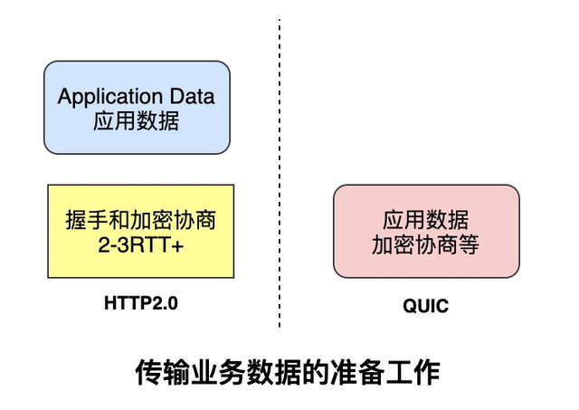
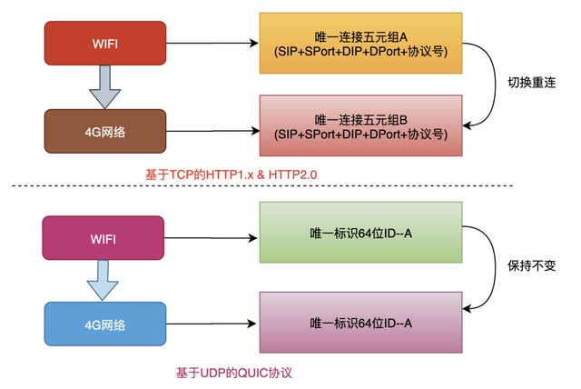

概括
作用域和闭包
执行上下文
针对一段script标签或者一个函数而言
-
JS只有全局作用域和函数作用域（在es6之前） -
使用
var声明的变量会在执行之前提升到作用域的最顶端。 -
即可以在函数声明之前调用函数。在变量声明之前调用变量（此时变量的值为
undefined）。 -
函数还包括this，arguments
this
只有在执行的时候才能确定。包括赋值引用。注意区分构造函数内部的 this 。
可以通过 call, apply , bind 来改变 this 的指向。
闭包
返回一个函数或者传入一个函数去执行。都可以称之为闭包。
在这个闭包函数内部，可以定义变量来防止外部污染。即，私有变量。
不过需要注意内存泄露问题，因为在这边定义的变量无法自动释放。
function F1() {
var a = 100;
return function () {
console.log(a); // 自由变量，取父级作用域中的值。
};
}
var f1 = F1();
var a = 200;
f1(); // 100
创建10个标签，注入点击事件，分别按顺序输出1-10
var i;
for (i = 0; i < 10; i++) {
(function (i) {
var a = document.createElement("a");
a.innerHTML = i + "<br>";
a.addEventListener("click", function (e) {
e.preventDefault();
alert(i);
});
document.body.appendChild(a);
})(i);
}
新的es6可以用let来解决这个问题。
for (let i = 0; i < 10; i++) {
var a = document.createElement("a");
a.innerHTML = i + "<br>";
a.addEventListener("click", function (e) {
e.preventDefault();
alert(i);
});
document.body.appendChild(a);
}
JS变量复习
- typeof 能得到哪些类型
- === 和 ==
- JS的内置函数
- 按存储方式划分，js变量有哪些类型
- 理解JSON
变量类型
值类型和引用类型
值类型：undefined, number, boolean, string, symbol, null
引用类型：function, object
还牵扯到堆内存和栈内存的关系，稍微延伸一下。
堆内存和栈内存
栈内存主要用于存储各种基本类型的变量，包括boolean、number、string、undefined、null，以及对象变量的指针，这时候栈内存给人的感觉就像一个线性排列的空间，每个小单元大小基本相等。
而堆内存主要负责像对象Object这种变量类型的存储，如下图
原始数据类型都有固定的大小保存在栈内存中，由系统自动分配存储空间，可以直接进行操作。
对于new出来的变量，思考一下new关键字所作所为，就知道，new出来的对象都是存储在堆内存中的。
我们常说的值类型和引用类型其实说的就是栈内存变量和堆内存变量，再想想值传递和引用传递、深拷贝和浅拷贝，都是围绕堆栈内存展开的，一个是处理值，一个是处理指针。
变量定义的过程
例如var a = 10:
先将10压入栈中，然后在当前作用域中声明一个变量a，此时a = undefined，然后再将 a 关联到10。
函数定义的过程
现在堆内存中开辟一块空间，将函数的以字符串的形式存入。然后会有一个十六进制的堆内存的值。然后存入栈内存中。然后声明变量fn，然后将fn关联到这个内存地址上。
垃圾回收机制
浏览器的垃圾回收机制
-
引用计数（RC）
-
标记清除
标记清除指的是当变量进入环境时，这个变量标记为“进入环境”;而当变量离开环境时，则将其标记为“离开环境”，最后，垃圾回收器完成内存清除工作，销毁并回收那些被标记为“离开环境”的值所占用的内存空间
V8的垃圾回收机制
分代回收：新生代和老生代。
新生代的垃圾回收
在堆内存中分两个部分，一个 From（使用中的空间） ，一个 To（闲置状态），分配对象的时候先在from空间中进行分配，如果一个对象不再被引用了，那么将会被留在From中，将其他被引用的对象移动到To空间中，然后对调From和To，最后释放To中的空间。
晋升
在新生代垃圾回收的过程中，当一个对象经过多次复制后依然存活，他将会被认为是生命周期较长的对象，随后会被移动到老生代中，采用新的算法进行管理
在From空间和To空间进行反转的过程中，如果To空间中的使用量已经超过了25%,那么就将From中的对象直接晋升到老生代内存空间中
老生代的垃圾回收
老生代的内存空间是一个连续的结构。
标记清除（Mark Sweep）：标记要回收的对象，直接释放相应的地址空间。执行完成之后会导致内存不连续 。
标记合并（Mark Compact）：将存活的对象移动到一边，需要被回收的移动到另一边。然后对需要被回收的区域进行整体垃圾回收。
typeof

变量计算
强制类型转换的场景
- 字符串拼接
- == 运算符
- if语句
- 逻辑运算


双等号的比较的时候的类型转换


// 防抖。当持续触发事件时，一定时间段内没有再触发事件，事件处理函数才会执行一次，如果设定的时间到来之前，又一次触发了事件，就重新开始延时。
let deBounce = (fn, delay) => {
let timer = null;
return function (...args) {
if (timer) {
clearTimeout(timer);
}
timer = setTimeout(() => {
fn(...args);
}, delay)
}
}
// 节流。当持续触发事件时，保证一定时间段内只调用一次事件处理函数。
let throttle = (fn, delay) => {
let flag = true;
return function (...args) {
if (!flag) return;
flag = false;
setTimeout(() => {
fn(...args)
flag = true;
}, delay)
}
}
let deBounce2 = (fn, delay) => {
let start = Date.now();
return function (...args) {
if (Date.now() - start > delay) {
fn(...args);
}
start = Date.now();
}
}
let throttle2 = (fn, delay) => {
let start = Date.now();
return function (...args) {
if (Date.now() - start > delay) {
fn(...args);
start = Date.now();
}
}
}
函数相关
compose函数和pipe函数
函数组合，将多个函数组合在一起。
compose函数
- 将需要嵌套执行的函数平铺
- 嵌套执行指的是，一个函数的返回值作为另一个函数的参数
compose 函数主要是实现了函数式编程中的 pointfree ，使我们专注于转换而不是数据本身。
也就是说，我们可以把数据处理的过程，定义成一种与参数无关合成运算。不需要关注参数本身，只需要将运算合成即可。
pointfree 就是不使用所要处理的值，只合成运算过程。即无参数分隔。
let compose = function () {
// 将arguments转为数组
let args = [].slice.call(arguments)
return function (params) {
// 自右向左，依次执行
return args.reduceRight(function (res, cb) {
return cb(res)
}, params)
}
}
es6版：
const compost = (...args) => params => args.reduceRight((res, cb) => cb(res), params)
Redux就是依赖compose来实现中间件的功能的。
Webpack的loader也是。
pipe函数
pipe就是compose的复制版，只不过执行方向变了，改为从左向右
export default function Pipe(...funcs) {
return params => funcs.reduce((res, cb) => cb(res), params)
}
常用函数
memozition
将上次的计算结果缓存起来，当下次调用时，如果遇到了相同的参数，就直接返回缓存中的数据
原理：
将参数和对应结果存储到一个对象中，调用时，先判断参数对应的数据是否存在，如果存在则直接返回，如果不存在才计算并存到缓存中。
闭包的灵魂体现！
lodash中的memoize实现：
// func是需要缓存的函数，resolver是计算key的函数
function memoize(func, resolver) {
// 类型校验
if (typeof func !== 'function' || (resolver != null && typeof resolver !== 'function')) {
throw new TypeError('Expected a function')
}
const memoized = function(...args) {
// 先计算一下key，如果没有计算函数，则取第一个参数
const key = resolver ? resolver.apply(this, args) : args[0]
// 取缓存
const cache = memoized.cache
// 如果缓存中有值，则直接返回
if (cache.has(key)) {
return cache.get(key)
}
// 缓存中没有值，先计算，再放入缓存中，再更新缓存
const result = func.apply(this, args)
memoized.cache = cache.set(key, result) || cache
return result
}
// 缓存初始化为Map
memoized.cache = new (memoize.Cache || Map)
// 返回缓存函数
return memoized
}
memoize.Cache = Map
export default memoize
使用场景：
需要大量重复计算或依赖之前的结果的情况
比如斐波那契数列
curry
将使用多个参数的一个函数，转化成一系列使用一个参数的函数的技术。

比如，使用正则校验一个字符串：

或者从对象数组中取某一个字符的值

在调用 getProp("age") 之后，这个的返回值，就变成了接受一个对象并返回对象的 age 属性的函数，放在map中就很舒服了。
偏函数
如果说，柯里化是将一个多参数函数转换成多个单参数函数，也就是将一个n元函数转换成n个一元函数。
那么偏函数就是固定一个函数的一个或者多个参数，也就是将一个n元函数转换成一个n-x元函数。
也就是：
柯里化： f(a,b,c) => f(a)(b)(c)
偏函数： f(a,b,c) => f(a,b)(c)
可以简单实用bind来实现
let add = (x, y) => x + y;
let rst = add.bind(null, 1);
rst(2); // 3
时间窗口
在一定时间内，如果请求同一个url，则只请求一次。
const fetch = require("node-fetch");
function hash(...args) {
return args.join(",");
}
function window_request(f, time = 50) {
let w = {};
// 是否有时间窗口
let flag = false;
return (...args) => {
return new Promise((resolve) => {
// 如果w中没有这次请求（通过hash存入）, 如果有，则在最后 L54 将resolve存入到对应的resolvers里
if (!w[hash(args)]) {
w[hash(args)] = {
func: f,
args,
// 将不同的request的resolve也添加进来，方便最后统一做处理。
resolvers: [],
};
}
// 如果没有时间窗口
if (!flag) {
// 接下来是创建一个时间窗口
console.log('create a window')
flag = true;
setTimeout(() => {
// 对w中每一个请求进行处理。
Object.keys(w).forEach((key) => {
// 获取参数进行执行
const { func, args, resolvers } = w[key];
console.log("run once ---- ", resolvers.length);
func(...args)
.then((res) => {
return res.text();
})
.then((t) => {
// 将获取到的结果批量放到resolve中处理
resolvers.forEach((r) => {
console.log("result anywhere");
r(t);
});
// 重置访问窗口
flag = false;
w = {};
});
});
}, time);
}
w[hash(args)].resolvers.push(resolve);
});
};
}
const request = window_request(fetch, 20);
request("https://www.baidu.com");
request("https://www.baidu.com");
request("https://www.baidu.com");
request("https://www.baidu.com");
request("https://www.baidu.com");
request("https://www.baidu.com");
request("https://www.baidu.com");
console.log('break')
setTimeout(() => {
request("https://www.baidu.com");
request("https://www.baidu.com");
request("https://www.baidu.com");
request("https://www.baidu.com");
request("https://www.baidu.com");
request("https://www.baidu.com");
request("https://www.baidu.com");
}, 10000);
指数补偿
在网络环境不稳定的情况下，以指数级别的时间间隔发送请求，直到任意某一次请求得到了返回
function request(url) {
// 判断是否已经完成请求
let resolved = false;
// 次数
let t = 1;
return new Promise((resolve, reject) => {
function doFetch() {
// 如果已经完成请求，或者次数已达上限，则直接返回
if (resolved || t > 16) {
return;
}
// 否则发送请求
fetch(url).then((resp) => {
// 如果标记还处在未完成的状态
if (!resolved) {
// 将结果返回
resolve(resp);
// 将标记置为已完成
resolved = true;
}
});
// 指数级的时间间隔发送请求
setTimeout(() => {
// 调用自己
doFetch();
t *= 2;
}, t * 100);
}
// 首次调用
doFetch();
});
}
问题引入
最近一直在看原型继承相关的东西，翻到这么一篇文章： 从ES6中的extends讲js原型链与继承
文中有一个点让我很感兴趣，箭头函数在继承过程中无法通过super关键字获取，这是为什么呢？
前置知识
MDN上关于super的介绍
The super keyword is used to access and call functions on an object's parent - in MDN 大概有这么几个关键点：
- 子类中存在constructor方法的时候，需要调用super方法，并且需要在使用this关键字之前调用
- super关键字可以用来调用父对象上的方法
- 可以使用super来调用父对象上的静态方法
- 不可以使用delete来删除super上的属性
- 不可以复写super对象上的只读属性
子类中是否必须主动调用super方法？
我的看法是不需要。 网上有些文章（比如这篇）写道：
因为若不执行super，则this无法初始化。
我的个人理解是，this是指代执行上下文环境的，不存在无法初始化的情况。更准确的说法是这样：如果不使用super方法，那么父类中的属性值无法进行初始化，如果这个时候子类通过this字段来访问了父类中的属性值，那么只能得到一个undefined。至于为什么这么写编译的时候会报错？我的理解是，这应该是一种语法错误，而且是一种规范要求，ES6语法的规范要求，这种要求并不是说会影响到代码的实际执行。举个栗子：
// typescript中一段简单的继承代码实现
class Parent {
name = 'parent';
func = function() {
console.log('func in parent called.');
}
}
class Child extends Parent {
age = 3;
func = function() {
console.log('age is: ', this.age); // 使用了this，不会报错
}
}
这段代码非常简单，在子类中使用了this关键字，编译时不会报错，也可以正常执行。然后我们进行一点修改，在子类中引入constructor方法
class Child extends Parent {
age = 3;
// error TS2377: Constructors for derived classes must contain a 'super' call.
constructor() {
}
func = function() {
console.log('age is: ', this.age);
}
}
可以看到，编译阶段已经开始报错了。在typescript的语法中，子类的constructor方法中不但需要调用super方法，而且必须在第一行代码就调用super，否则都是会报错的。看下面这段代码:
class Child extends Parent {
age = 3;
constructor() {
console.log('First line in constructor without super method');
super(); // error TS2376: A 'super' call must be the first statement in the constructor when a class contains initialized properties or has parameter properties.
}
func = function() {
console.log('age is: ', this.age);
}
}
来，我们接着改
class Parent {
name = 'parent';
func = function() {
console.log('func in parent called.');
}
}
class Child extends Parent {
age = 3;
constructor() {
console.log('Show property of parent, name is: ', this.name); // error TS17009: 'super' must be called before accessing 'this' in the constructor of a derived class.
console.log('Show property of child, age is: ', this.age); // error TS17009: 'super' must be called before accessing 'this' in the constructor of a derived class.
super(); // error TS2376: A 'super' call must be the first statement in the constructor when a class contains initialized properties or has parameter properties.
console.log('Show property of parent, name is: ', this.name);
console.log('Show property of child, age is: ', this.age);
}
func = function() {
console.log('age is: ', this.age);
}
}
可以看到，编译期已经开始报各种错误了，不过这不重要，我们这里利用typescript的编译器（tsc）来进行编译，并查看编译后的代码内容：
var __extends = (this && this.__extends) || (function () {
var extendStatics = Object.setPrototypeOf ||
({ __proto__: [] } instanceof Array && function (d, b) { d.__proto__ = b; }) ||
function (d, b) { for (var p in b) if (b.hasOwnProperty(p)) d[p] = b[p]; };
return function (d, b) {
extendStatics(d, b);
function __() { this.constructor = d; }
d.prototype = b === null ? Object.create(b) : (__.prototype = b.prototype, new __());
};
})();
var Parent = (function () {
function Parent() {
this.name = 'parent';
this.func = function () {
console.log('func in parent called.');
};
}
return Parent;
}());
var Child = (function (_super) {
__extends(Child, _super);
function Child() {
var _this = this;
_this.age = 3;
_this.func = function () {
console.log('age is: ', this.age);
};
console.log('Show property of parent, name is: ', _this.name); // 输出undefined，因为此时子类的实例上还没有继承到父类的属性值
console.log('Show property of child, age is: ', _this.age); // 输出3，子类实例自己的属性值可以访问
_this = _super.call(this) || this; // 构造函数式的继承实现，这一步就是讲父类的属性值设置到子类实例上
console.log('Show property of parent, name is: ', _this.name); // 输出parent，此时子类的实例上经过上一步的继承，得到了父类的属性值
console.log('Show property of child, age is: ', _this.age); // 输出3，子类实例自己的属性值可以访问
return _this;
}
return Child;
}(Parent));
//# sourceMappingURL=demo.js.map
由此可以知道，在ES6中使用extends进行继承操作的过程中，
- 子类并非必须调用super方法，除非存在constructor方法
- 在constructor方法中应该首先调用super方法，这是语法要求，不过这不是必须的
- 在调用super方法之前，将无法通过this关键字来访问父类的属性（这里就可以解释其他文章中提到的 ‘若不执行super，则this无法初始化’，更准确的说法应该是‘若不执行super，则无法将父类的属性值初始化到当前子类实例上’）
子类中使用super.prop和super[expr]的方式是如何访问父类的属性和方法？
我们直接来看代码吧,关键点都注释了的
class Parent {
public name = 'parent';
public static staticName = 'staticParent';
public static staticFunc() {
console.log('staticFunc called in parent.');
}
public arrowFunc = () => {
console.log('arrowFunc called in parent.');
}
public normalFunc() {
console.log('normalFunc called in parent.')
}
}
class Child extends Parent {
public static staticFunc() {
super.staticFunc();
console.log('staticFunc called in Child.');
}
arrowFunc = () => {
super.arrowFunc();
console.log('arrowFunc called in Child.');
}
normalFunc() {
super.normalFunc();
console.log('normalFunc called in Child.')
}
getName() {
console.log('parent name is: ', super.name);
console.log('parent staticName is: ', super.staticName);
console.log('child name is: ', this.name);
}
}
/** 编译后的代码 **/
var __extends = (this && this.__extends) || (function () {
var extendStatics = Object.setPrototypeOf ||
({ __proto__: [] } instanceof Array && function (d, b) { d.__proto__ = b; }) ||
function (d, b) { for (var p in b) if (b.hasOwnProperty(p)) d[p] = b[p]; };
return function (d, b) {
extendStatics(d, b);
function __() { this.constructor = d; }
d.prototype = b === null ? Object.create(b) : (__.prototype = b.prototype, new __());
};
})();
var Parent = (function () {
function Parent() {
this.name = 'parent';
this.arrowFunc = function () {
console.log('arrowFunc called in parent.');
};
}
// 编译后的静态方法可以存在于Parent类的内部
Parent.staticFunc = function () {
console.log('staticFunc called in parent.');
};
Parent.prototype.normalFunc = function () {
console.log('normalFunc called in parent.');
};
return Parent;
}());
Parent.staticName = 'staticParent'; // 编译后的静态属性依然存在于Parent类外
var Child = (function (_super) {
__extends(Child, _super);
function Child() {
var _this = _super !== null && _super.apply(this, arguments) || this;
_this.arrowFunc = function () { // 子类实例调用arrowFunc的时候会报错，因为_super.prototype上是不存在arrowFunc方法的
_super.prototype.arrowFunc.call(_this); // Uncaught TypeError: Cannot read property 'call' of undefined
console.log('arrowFunc called in Child.');
};
return _this;
}
Child.staticFunc = function () {
_super.staticFunc.call(this); // super可以正常访问父类的静态方法
console.log('staticFunc called in Child.');
};
Child.prototype.normalFunc = function () {
_super.prototype.normalFunc.call(this);
console.log('normalFunc called in Child.');
};
Child.prototype.getName = function () {
console.log('parent name is: ', _super.prototype.name); // 输出undefined， 父类原型（_super.prototype）上不存在name属性
console.log('parent staticName is: ', _super.prototype.staticName); // 输出undefined，super无法正常访问父类的静态属性
console.log('child name is: ', this.name); // 输出parent，这是子类实例上的属性，继承自父类
};
return Child;
}(Parent));
//# sourceMappingURL=demo.js.map
这里再顺嘴提一句，关于静态属性和静态方法的区别。为什么在子类中通过super关键字来获取父类的静态方法经过编译后是_super.staticFunc，而获取静态属性依然是_super.prototype.staticName，从原型上获取导致获取失败呢？这个问题目前我还没有找到答案，希望有知道的小伙伴可以不吝指教。 不过我倒是搜到一些其他相关内容。 Class 的静态属性和实例属性
因为 ES6 明确规定，Class 内部只有静态方法，没有静态属性。
虽然这种规定从ES7开始得到了修正，我们目前已经可以将静态属性写在Class的内部，但是经过编译之后可以发现，静态属性依然存在于类的实现的外部。
var Parent = (function () {
function Parent() {
this.name = 'parent';
this.arrowFunc = function () {
console.log('arrowFunc called in parent.');
};
}
// 编译后的静态方法可以存在于Parent类的内部
Parent.staticFunc = function () {
console.log('staticFunc called in parent.');
};
Parent.prototype.normalFunc = function () {
console.log('normalFunc called in parent.');
};
return Parent;
}());
Parent.staticName = 'staticParent'; // 编译后的静态属性依然存在于Parent类外
回到问题本身
问：箭头函数在继承过程中无法通过super关键字获取，这是为什么呢？ 答：因为子类中使用super.prop和super[expr]的方式获取的是父类原型（prototype）上的方法，静态方法除外。
参考资料
从ES6中的extends讲js原型链与继承 React ES6 class constructor super() Class 的静态属性和实例属性
居中布局
水平居中
inline-block + text-align
.parent {
text-align: center;
}
.children {
display: inline-block;
}
text-align会对inline级别的元素生效
table + margin
.children {
display: table;
margin: 0 auto;
}
子元素display: table， table在没有设置宽度的时候，跟里面的内容的宽度是一样的。
table还可以使用margin: auto，因此可以实现水平居中。
absolute + transform
.parent {
position: relative;
}
.children {
position: absolute;
left: 50%;
transform: translateX(-50%);
}
flex + justify + content
.parent {
display: flex;
justify-content: center;
}
flex-item的默认样式是1
或
.parent {
display: flex;
}
.children {
margin: 0 auto;
}
垂直居中
tabel-cell + vertical-align
.parent {
display: table-cell;
vertical-align: middle;
}
tabel-cell会把子元素放在垂直中间，
vertical-align: middle再把内容居中
absolute + transform
.parent {
position: relative;
}
.children {
position: absolute;
top: 50%;
transform: translateY(-50%);
}
flex + align-items
.parent {
display: flex;
align-items: center;
}
居中
inline-block + text-align + tabel-cell + vertical-align
.parent {
text-align: center;
display: table-cell;
vertical-align: middle;
}
.children {
display: inline-block;
}
absolute + transform
.parent {
position: relative;
}
.children {
position: absolute;
left: 50%;
top: 50%;
transform: translate(-50%, -50%);
}
flex + justify-content + align-items
.parent {
display: flex;
justify-content: center;
align-items: center;
}
虚拟DOM
虚拟DOM是什么
DOM (Document Object Model) 译为文档对象模型，是 HTML 和 XML 文档的编程接口。
HTML DOM 定义了访问和操作 HTML 文档的标准方法。
DOM 以树结构表达 HTML 文档。
然后我们来做一个小实验：
const div = document.createElement('div');
let str = '';
for(let i in div) {
str += `${i} `
}
const attrs = str.split(' ')
console.log(attrs.splice(0,5), attrs.length)
out
(5) ["align", "title", "lang", "translate", "dir"] 294
我们可以看到浏览器对 DOM 赋予了很多属性来实现页面的各种功能，整个 DOM 的设计是相当复杂的。
当我们使用 document.body.appendChild(node) 往 body 节点上添加一个元素，调用该 API 之后会引发一系列的连锁反应。
首先渲染引擎会将 node 节点添加到 body 节点之上，然后触发样式计算、布局、绘制、栅格化、合成等任务，我们把这一过程称为重排。
除了重排之外，还有可能引起重绘或者合成操作，形象地理解就是“牵一发而动全身”。
另外，对于 DOM 的不当操作还有可能引发强制同步布局和布局抖动的问题，这些操作都会大大降低渲染效率。
因此，对于 DOM 的操作我们时刻都需要非常小心谨慎。
当然，对于简单的页面来说，其 DOM 结构还是比较简单的，所以以上这些操作 DOM 的问题并不会对用户体验产生太多影响。
但是对于一些复杂的页面或者目前使用非常多的单页应用来说，其 DOM 结构是非常复杂的，而且还需要不断地去修改 DOM 树，每次操作 DOM 渲染
引擎都需要进行重排、重绘或者合成等操作，因为 DOM 结构复杂，所生成的页面结构也会很复杂，对于这些复杂的页面，执行一次重排或者重绘操作 都是非常耗时的，这就给我们带来了真正的性能问题。
所以我们需要有一种方式来减少 JavaScript 对 DOM 的操作，这时候虚拟 DOM 就上场了。
简而言之，我们需要用一种方式去描述浏览器的 DOM 结构，并且在数据更新的过程中通过虚拟 DOM 的对比来做一层“缓冲”。避免频繁的直接操作 DOM 对象。
什么是虚拟DOM
在谈论什么是虚拟 DOM 之前，我们先来看看虚拟 DOM 到底要解决哪些事情。
- 将页面改变的内容应用到虚拟
DOM上，而不是直接应用到DOM上。 - 变化被应用到虚拟
DOM上时，虚拟DOM并不急着去渲染页面，而仅仅是调整虚拟DOM的内部状态，这样操作虚拟DOM的代价就变得非常轻了。 - 在虚拟
DOM收集到足够的改变时，再把这些变化一次性应用到真实的DOM上。
基于以上三点，我们再来看看什么是虚拟 DOM。为了直观理解，你可以参考下图：

该图结合 React 流程画的一张虚拟 DOM 执行流程图，下面我们就结合这张图来分析下虚拟 DOM 到底怎么运行的。
创建阶段。首先依据 JSX 和基础数据创建出来虚拟 DOM，它反映了真实的 DOM 树的结构。然后由虚拟 DOM 树创建出真实 DOM 树，真实的 DOM 树生成完后，
再触发渲染流水线往屏幕输出页面。
更新阶段。如果数据发生了改变，那么就需要根据新的数据创建一个新的虚拟 DOM 树；然后 React 比较两个树，找出变化的地方，并把变化的地方一次性更新到真实的 DOM 树上
最后渲染引擎更新渲染流水线，并生成新的页面。
通过上面的描述，我们知道，当我们使用一个JS对象来描述浏览器的 DOM 结构的时候，这个对象就叫做虚拟 DOM。（浏览器的 DOM 对象过于复杂）
下面这段话是我摘录的一段对于虚拟 DOM的描述。
Virtual DOM是一种编程概念。在这个概念里，UI以一种理想化的，或者说“虚拟的”表现形式被保存于内存中，并通过如ReactDOM等类库使之与“真实的”DOM同步。这一过程叫做协调。- 这种方式赋予了
React声明式的API：你告诉React希望让UI是什么状态，React就确保DOM匹配该状态。这使您可以从属性操作、 事件处理和手动DOM更新这些在构建应用程序时必要的操作中解放出来。- 与其将
Virtual DOM视为一种技术，不如说它是一种模式，人们提到它时经常是要表达不同的东西。在React的世界里，术语Virtual DOM通常 与React元素关联在一起，因为它们都是代表了用户界面的对象。- 而
React也使用一个名为fibers的内部对象来存放组件树的附加信息。上述二者也被认为是React中Virtual DOM实现的一部分。
我们来总结一下上面的话中比较重要的两点：
- 虚拟
DOM和真实DOM的交互不由虚拟DOM直接完成，交由第三方库完成，虚拟DOM只描述UI，UI到具体的展现，由ReactDOM等类库实现真正的渲染。 因此，ReactNative，小程序等跨端开发才得以实现。 React之类的类库，替你摆脱了频繁书写DOM操作的指令的坑，你不必再去书写类似document.getElementById(xxx).appendChild(xxx)之类的代码。 他们来负责数据变动到视图变动的过程。
在 React 或者 Vue 中，虚拟 DOM 的创建都是由模板或者 JSX 来完成的，但是这两者到虚拟 DOM 的转移都是工程化干的事情（webpack +
loader），因此我们也不需要去书写类似 React.createElement(xxx) 的代码，只需要书写 JSX 即可以通过工程化自动生成上面的代码。
因此虚拟 DOM 极大程度上帮我们减轻了开发的负担，易于维护，并且不依赖于某一特定的环境。
VDOM的优点
-
抽象了原本的渲染过程，实现了跨平台的的能力，从而不局限于浏览器的
DOM，也可以是安卓和IOS的原生组件，也可以是小程序。 -
抽象了渲染过程之后，使得组件的抽象能力也得到了提升，并且可以适配
DOM以外的渲染目标。 -
VDOM在牺牲了部分性能的前提下，增加了可维护性，这也是很多框架的通性。 实现了对DOM集中化操作，在数据改变的时候先对VDOM进行修改，再反映到真实的DOM中，用最小的代价来更新DOM，提升效率。 -
打开了函数式
UI编程的大门 -
跨平台（
ReactNative，React VR等） -
可以更好的实现
SSR，同构渲染等 -
组件的高度抽象化
VDOM的缺点
- 首次渲染大量
DOM的时候，由于多了一层虚拟DOM的计算，所以会比innerHTML插入的慢。 - 需要在内存中维护一份
VDOM - 如果虚拟
DOM有着大量的更改，使用虚拟DOM是很合适的，如果是单一的频繁的更新的话，虚拟DOM需要花时间去处理计算工作。
因此如果你有一个DOM节点相对较少的页面，使用VDOM可能会变慢。
但是对于大多数单页面应用，使用VDOM应该是更快的
React 中的 diff 算法
关于React中的虚拟DOM
Fiber架构之后的不同。可以自行搜索Fiber相关的内容。
Fiber之后，虚拟DOM从树形结构变为了可恢复的链表的结构。
Fiber 的出现主要是为了解决在大量 dom diff 的过程中，保证渲染流畅，（原来的 stack reconciler 会在 diff
过程中阻塞线程，导致页面卡顿，因为只有diff 完成之后才会渲染页面）
其实协程的另外一个称呼就是 Fiber，所以在这里我们可以把 Fiber 和协程关联起来，那么所谓的 Fiber reconciler 相信你也很清楚了，就是在执行算法的过程中出让主线程
这样就解决了 Stack reconciler 函数占用时间过久的问题。
实际上的思想类似于时间切片的概念。
主要利用了浏览器 requestIdleCallback 这个 API
关于Vue中的虚拟DOM
整体的实现思路大致类似上面的手动实现的方法。
以 Vue2.x 为例，可以在源码中找到这个文件来看一下。
在 Vue3.x 中并没有引进 Fiber 这一架构，具体原因可以在拓展阅读中查看。
拓展阅读
手动实现一个简单的虚拟 DOM (类似 Vue2.x ， React 中的 Fiber 太过于复杂)
创建
我们来尝试简单渲染一个 DOM 结构，
<div id='app'>
<p>节点1</p>
</div>
我们有一个最简陋的 createElement 函数来返回一个虚拟 DOM
const vnodeType = {
HTML: 'HTML',
TEXT: 'TEXT',
COMPONENT: 'COMPONENT',
CLASS_COMPONENT: 'CLASS_COMPONENT',
}
const childType = {
EMPTY: 'EMPTY',
SINGLE: 'SINGLE',
MULTIPLE: 'MULTIPLE',
}
// 新建虚拟DOM
// 名字，属性，子元素
function createElement(tag, data, children = null) {
let flag;
if (typeof tag === 'string') {
// 普通html标签
flag = vnodeType.HTML
} else if (typeof tag === 'function') {
flag = vnodeType.COMPONENT
} else {
flag = vnodeType.TEXT
}
// 0， 1， n
let childrenFlag;
if (children == null) {
childrenFlag = childType.EMPTY
} else if (Array.isArray(children)) {
let length = children.length
if (length === 0) {
childrenFlag = childType.EMPTY
} else {
childrenFlag = childType.MULTIPLE
}
} else {
childrenFlag = childType.SINGLE
children = createTextVnode(children + '')
}
// 返回vnode
return {
flag, //vnode类型
tag, // 标签，div文本没有tag，组件就是函数
data,
children,
childrenFlag
}
}
//渲染
function render() {
}
// 创建文本类型 vnode
function createTextVnode(text) {
return {
flag: vnodeType.TEXT,
tag: null,
data: null,
children: text,
childrenFlag: childType.EMPTY
}
}
页面上
let div = createElement('div', { id: 'app' }, [
createElement('p', {}, '节点1'),
]);
console.log(JSON.stringify(div, null, 2))
out
{
"flag": "HTML",
"tag": "div",
"data": {
"id": "app"
},
"children": [
{
"flag": "HTML",
"tag": "p",
"data": {},
"children": {
"flag": "TEXT",
"tag": null,
"data": null,
"children": "节点1",
"childrenFlag": "EMPTY"
},
"childrenFlag": "SINGLE"
}
],
"childrenFlag": "MULTIPLE"
}
接下来我们将它渲染到页面上。
渲染
我们搞多一些 p 元素在页面上，并且调用 render 函数来渲染。
<html lang="en">
<head>
<meta charset="UTF-8" />
<meta http-equiv="X-UA-Compatible" content="IE=edge" />
<meta name="viewport" content="width=device-width, initial-scale=1.0" />
<title>Document</title>
<style>
.item-header {
font-size: 30px;
color: green;
}
</style>
</head>
<body>
<div id='app'></div>
<script src='./index.js'></script>
<script>
let vnode = createElement('div', { id: 'app' }, [
createElement('p', { key: 'a', style: { color: 'blue' } }, '节点1'),
createElement('p', { key: 'b', '@click': () => alert('xxx') }, '节点2'),
createElement('p', { key: 'c', 'class': 'item-header' }, '节点3'),
createElement('p', { key: 'd' }, '节点4'),
]);
render(vnode, document.getElementById('app'))
// console.log(JSON.stringify(div, null, 2))
</script>
</body>
</html>
还有一些额外的工作（简易版本），需要注意以下的一些问题。
- 属性的处理。
- 首次渲染和
diff el属性- 递归渲染子元素
简易版的代码如下:
const vnodeType = {
HTML: 'HTML',
TEXT: 'TEXT',
COMPONENT: 'COMPONENT',
CLASS_COMPONENT: 'CLASS_COMPONENT',
};
const childType = {
// 节点没有子元素或者是空数组
EMPTY: 'EMPTY',
// 节点是文本元素
SINGLE: 'SINGLE',
// 节点有1或多个子元素
MULTIPLE: 'MULTIPLE',
};
// 新建虚拟DOM
// 名字，属性，子元素
function createElement(tag, data, children = null) {
let flag;
if (typeof tag === 'string') {
// 普通html标签
flag = vnodeType.HTML;
} else if (typeof tag === 'function') {
flag = vnodeType.COMPONENT;
} else {
flag = vnodeType.TEXT;
}
// 0， 1， n
let childrenFlag;
if (children == null) {
childrenFlag = childType.EMPTY;
} else if (Array.isArray(children)) {
let length = children.length;
if (length === 0) {
childrenFlag = childType.EMPTY;
} else {
childrenFlag = childType.MULTIPLE;
}
} else {
childrenFlag = childType.SINGLE;
// 文本元素直接给textVnode节点
children = createTextVnode(children + '');
}
// 返回vnode
return {
flag, //vnode类型
tag, // 标签，div文本没有tag，组件就是函数
data,
children,
childrenFlag,
el: null,
};
}
//渲染
function render(vnode, container) {
// 区分首次渲染和再次渲染
// 首次渲染直接mount，再次渲染需要diff
mount(vnode, container);
}
// 首次挂载元素
function mount(vnode, container) {
let { flag } = vnode;
// 区别对待HTML节点和Text节点
if (flag === vnodeType.HTML) {
mountElement(vnode, container);
} else if (flag === vnodeType.TEXT) {
mountText(vnode, container);
}
}
function mountElement(vnode, container) {
let dom = document.createElement(vnode.tag);
// 存一下，以后都能拿到真实dom
vnode.el = dom;
let { data, children, childrenFlag } = vnode;
// 挂载data属性
if (data) {
for (let key in data) {
// 节点，名字，老值，新值
patchData(dom, key, null, data[key]);
}
}
// 根据子元素的不同类型来渲染子元素
if (childrenFlag !== childType.EMPTY) {
if (childrenFlag === childType.SINGLE) {
mount(children, dom);
} else if (childrenFlag == childType.MULTIPLE) {
for (let i = 0; i < children.length; i++) {
mount(children[i], dom);
}
}
}
// 挂载
container.appendChild(dom);
}
function mountText(vnode, container) {
let dom = document.createTextNode(vnode.children);
vnode.el = dom;
// 挂载
container.appendChild(dom);
}
function patchData(el, key, pre, next) {
switch (key) {
// 处理style属性
case 'style':
for (let k in next) {
el.style[k] = next[k];
}
break;
// 处理class属性
case 'class':
el.className = next;
break;
// 其他
default:
// 处理事件绑定函数，以vue的@为例
if (key[0] === '@') {
if (next) {
el.addEventListener(key.slice(1), next);
}
} else {
el.setAttribute(key, next)
}
break;
}
}
// 创建文本类型 vnode
function createTextVnode(text) {
return {
flag: vnodeType.TEXT,
tag: null,
data: null,
children: text,
childrenFlag: childType.EMPTY,
el: null,
};
}
至此，虚拟 DOM 已经首次渲染到页面上了。
然后我们再来看看如何简单实现 DOM diff。
patch
假设我们要将
let vnode = createElement('div', { id: 'app' }, [
createElement('p', { key: 'a', style: { color: 'blue' } }, '节点1'),
createElement('p', { key: 'b', '@click': () => alert('xxx') }, '节点2'),
createElement('p', { key: 'c', 'class': 'item-header' }, '节点3'),
createElement('p', { key: 'd' }, '节点4'),
]);
里渲染的 DOM ，变更为如下的 DOM 结构，然后在一秒后重新渲染：
let vnode1 = createElement("div", { id: "app" }, [
createElement("p", { key: 'd' }, "节点4"),
createElement("p", { key: 'a', style: { color: 'blue' } }, "节点1"),
createElement("p", { key: 'b', }, "节点2"),
createElement("p", { key: 'e' }, "节点5"),
createElement("p", { key: 'f', style: { color: '#eee' } }, "节点4"),
]);
setTimeout(() => {
render(vnode1, document.getElementById('app'))
})
然后我们需要在 render 函数里区分首次渲染和再次渲染：
//渲染
function render(vnode, container) {
// 区分首次渲染和再次渲染
// 首次渲染直接mount，再次渲染需要diff
if (container.vnode) {
// 更新
patch(container.vnode, vnode, container);
} else {
mount(vnode, container);
}
container.vnode = vnode;
}
然后我们看一下 patch 函数：
function patch(pre, next, container) {
let nextFlag = next.flag;
let preFlag = pre.flag;
// 如果flag不同直接替换。
if (nextFlag !== preFlag) {
// 直接替换
repaceVnode(pre, next, container);
} else if (nextFlag == vnodeType.HTML) {
patchElement(pre, next, container);
} else if (nextFlag == vnodeType.TEXT) {
// 文本节点只需要更新文字内容即可
patchText(pre, next);
}
}
// 替换节点，先移除再mount
function replaceVnode(pre, next) {
container.removeChild(pre.el);
mount(next, container);
}
// 文本节点直接替换文字即可
function patchText(pre, next) {
let el = (next.el = pre.el);
if (next.children !== pre.children) {
el.nodeValue = next.children;
}
}
以上两种最简单的对比都是比较好理解的。接下来来看一下 flag 不同的 HTML 节点的替换 patchElement 。
function patchElement(pre, next, container) {
// 如果tag不同就直接替换掉
if (pre.tag !== next.tag) {
repaceVnode(pre, next, container);
return;
}
// 更新一下 el， 然后更新data
let el = (next.el = pre.el);
let preData = pre.data;
let nextData = next.data;
// 如果有新值，则全部更新到el上
if (nextData) {
for (let key in nextData) {
let preVal = preData[key];
let nextVal = nextData[key];
patchData(el, key, preVal, nextVal);
}
}
// 对旧值进行处理，
// 旧的有，新的没有，就要置为空
// 旧的有，新的有的已经在上面一个循环里被覆盖掉了。
if (preData) {
for (let key in preData) {
let preVal = preData[key];
if (preVal && !nextData.hasOwnProperty(key)) {
patchData(el, key, preVal, null);
}
}
}
// data更新完毕 下面更新子元素
patchChildren(
pre.childrenFlag,
next.childrenFlag,
pre.children,
next.children,
el
);
}
// 更新子元素的方法
function patchChildren(
preChildFlag,
nextChildFlag,
preChildren,
nextChildren,
container
) {
// 新老元素都有三种情况，用switch case做嵌套处理
// 更新子元素
// 老的是 1 ， 0， n
// 新的是 1， 0 ， n
switch (preChildFlag) {
// 老的是一个
case childType.SINGLE:
switch (nextChildFlag) {
// 新的也是一个，直接patch
case childType.SINGLE:
patch(preChildren, nextChildren, container)
break;
// 新的是空的，直接移除老的
case childType.EMPTY:
container.removeChild(preChildren.el)
break;
// 新的是多个的，先移除老的，再循环mount新的
case childType.MULTIPLE:
container.removeChild(preChildren.el)
for (let i = 0; i < nextChildren.length; i++) {
mount(nextChildren[i], container)
}
break;
}
break;
// 老的是空的
case childType.EMPTY:
switch (nextChildFlag) {
// 新的是一个，直接mount
case childType.SINGLE:
mount(nextChildren, container)
break;
// 新的也是空的，不做处理
case childType.EMPTY:
break;
// 新的是多个，直接循环mount新的
case childType.MULTIPLE:
for (let i = 0; i < nextChildren.length; i++) {
mount(nextChildren[i], container)
}
break;
}
break;
// 老的是多个
case childType.MULTIPLE:
switch (nextChildFlag) {
// 新的是一个，循环移除老的，再把新的mount上去
case childType.SINGLE:
for (let i = 0; i < preChildren.length; i++) {
container.removeChild(preChildren[i]);
}
mount(nextChildren, container)
break;
// 新的是空的，循环移除老的，接下来无操作
case childType.EMPTY:
for (let i = 0; i < preChildren.length; i++) {
container.removeChild(preChildren[i]);
}
break;
// 新的是多个的情况，比较复杂，React和Vue的实现不同。这里简单实现一下。
// 这个算法网上都有讲解，就不赘述了。
default:
let lastIndex = 0
for (let i = 0; i < nextChildren.length; i++) {
const nextVNode = nextChildren[i]
let j = 0,
find = false
for (j; j < preChildren.length; j++) {
const prevVNode = preChildren[j]
if (nextVNode.key === prevVNode.key) {
find = true
patch(prevVNode, nextVNode, container)
if (j < lastIndex) {
// 需要移动
const refNode = nextChildren[i - 1].el.nextSibling
container.insertBefore(prevVNode.el, refNode)
break
} else {
// 更新 lastIndex
lastIndex = j
}
}
}
if (!find) {
// 挂载新节点
const refNode =
i - 1 < 0
? preChildren[0].el
: nextChildren[i - 1].el.nextSibling
mount(nextVNode, container, refNode)
}
}
// 移除已经不存在的节点
for (let i = 0; i < preChildren.length; i++) {
const prevVNode = preChildren[i]
const has = nextChildren.find(
nextVNode => nextVNode.key === prevVNode.key
)
if (!has) {
// 移除
container.removeChild(prevVNode.el)
}
}
break;
}
break;
}
}
至此，一次 DOM 更新就实现了。
React事件机制
DOM事件
冒泡和捕获

先从父元素向下传递捕获，直到子元素处理掉，然后再逐个冒泡。
所以有了一个事件委托的机制。
React事件
React会将所有事件都绑定在document上。
统一使用事件监听。都是在冒泡阶段处理。
所以一般在组件挂载的时候增加监听事件。
组件卸载的时候删除监听事件。
事件触发的时候，组件会生成一个合成事件。然后发送到document上。
document会通过dispatch event回调函数依次执行dispatch listener中同类型事件的监听函数。
事件注册是在组件生成的时候，将VDOM中的所有的事件对应的原生事件都注册在Document中一个监听器中。所有的事件处理函数都存放在listenerbank中，并以key做为索引。（将可能要触发的事件分门别类）
- 是合成事件，不是DOM原生事件
- 在document监听所有支持事件
- 使用统一的分发函数dispatchEvent来指定事件函数的执行
React合成事件
1 React合成事件特点
React自己实现了一套高效的事件注册，存储，分发和重用逻辑，在DOM事件体系基础上做了很大改进，减少了内存消耗，简化了事件逻辑，并最大化的解决了IE等浏览器的不兼容问题。与DOM事件体系相比，它有如下特点
- React组件上声明的事件最终绑定到了document这个DOM节点上，而不是React组件对应的DOM节点。故只有document这个节点上面才绑定了DOM原生事件，其他节点没有绑定事件。这样简化了DOM原生事件，减少了内存开销
- React以队列的方式，从触发事件的组件向父组件回溯，调用它们在JSX中声明的callback。也就是React自身实现了一套事件冒泡机制。我们没办法用event.stopPropagation()来停止事件传播，应该使用event.preventDefault()
- React有一套自己的合成事件SyntheticEvent，不同类型的事件会构造不同的SyntheticEvent
- React使用对象池来管理合成事件对象的创建和销毁，这样减少了垃圾的生成和新对象内存的分配，大大提高了性能
那么这些特性是如何实现的呢，下面和大家一起一探究竟。
2 React事件系统
先看Facebook给出的React事件系统框图
浏览器事件（如用户点击了某个button）触发后，DOM将event传给ReactEventListener，它将事件分发到当前组件及以上的父组件。然后由ReactEventEmitter对每个组件进行事件的执行，先构造React合成事件，然后以queue的方式调用JSX中声明的callback进行事件回调。
涉及到的主要类如下
ReactEventListener：负责事件注册和事件分发。React将DOM事件全都注册到document这个节点上，这个我们在事件注册小节详细讲。事件分发主要调用dispatchEvent进行，从事件触发组件开始，向父元素遍历。我们在事件执行小节详细讲。
ReactEventEmitter：负责每个组件上事件的执行。
EventPluginHub：负责事件的存储，合成事件以对象池的方式实现创建和销毁，大大提高了性能。
SimpleEventPlugin等plugin：根据不同的事件类型，构造不同的合成事件。如focus对应的React合成事件为SyntheticFocusEvent
2 事件注册
JSX中声明一个React事件十分简单，比如
render() {
return (
<div onClick = {
(event) => {console.log(JSON.stringify(event))}
}
/>
);
}
那么它是如何被注册到React事件系统中的呢？
还是先得从组件创建和更新的入口方法mountComponent和updateComponent说起。在这两个方法中，都会调用到_updateDOMProperties方法，对JSX中声明的组件属性进行处理。源码如下
_updateDOMProperties: function (lastProps, nextProps, transaction) {
... // 前面代码太长，省略一部分
else if (registrationNameModules.hasOwnProperty(propKey)) {
// 如果是props这个对象直接声明的属性，而不是从原型链中继承而来的，则处理它
// nextProp表示要创建或者更新的属性，而lastProp则表示上一次的属性
// 对于mountComponent，lastProp为null。updateComponent二者都不为null。unmountComponent则nextProp为null
if (nextProp) {
// mountComponent和updateComponent中，enqueuePutListener注册事件
enqueuePutListener(this, propKey, nextProp, transaction);
} else if (lastProp) {
// unmountComponent中，删除注册的listener，防止内存泄漏
deleteListener(this, propKey);
}
}
}
下面我们来看enqueuePutListener，它负责注册JSX中声明的事件。源码如下
// inst: React Component对象
// registrationName: React合成事件名，如onClick
// listener: React事件回调方法，如onClick=callback中的callback
// transaction: mountComponent或updateComponent所处的事务流中，React都是基于事务流的
function enqueuePutListener(inst, registrationName, listener, transaction) {
if (transaction instanceof ReactServerRenderingTransaction) {
return;
}
var containerInfo = inst._hostContainerInfo;
var isDocumentFragment = containerInfo._node && containerInfo._node.nodeType === DOC_FRAGMENT_TYPE;
// 找到document
var doc = isDocumentFragment ? containerInfo._node : containerInfo._ownerDocument;
// 注册事件，将事件注册到document上
listenTo(registrationName, doc);
// 存储事件,放入事务队列中
transaction.getReactMountReady().enqueue(putListener, {
inst: inst,
registrationName: registrationName,
listener: listener
});
}
enqueuePutListener主要做两件事，一方面将事件注册到document这个原生DOM上（这就是为什么只有document这个节点有DOM事件的原因），另一方面采用事务队列的方式调用putListener将注册的事件存储起来，以供事件触发时回调。
注册事件的入口是listenTo方法, 它解决了不同浏览器间捕获和冒泡不兼容的问题。事件回调方法在bubble阶段被触发。如果我们想让它在capture阶段触发，则需要在事件名上加上capture。比如onClick在bubble阶段触发，而onCaptureClick在capture阶段触发。listenTo代码虽然比较长，但逻辑很简单，调用trapCapturedEvent和trapBubbledEvent来注册捕获和冒泡事件。trapCapturedEvent大家可以自行分析，我们仅分析trapBubbledEvent，如下
trapBubbledEvent: function (topLevelType, handlerBaseName, element) {
if (!element) {
return null;
}
return EventListener.listen(
element, // 绑定到的DOM目标,也就是document
handlerBaseName, // eventType
ReactEventListener.dispatchEvent.bind(null, topLevelType)); // callback, document上的原生事件触发后回调
},
listen: function listen(target, eventType, callback) {
if (target.addEventListener) {
// 将原生事件添加到target这个dom上,也就是document上。
// 这就是只有document这个DOM节点上有原生事件的原因
target.addEventListener(eventType, callback, false);
return {
// 删除事件,这个由React自己回调,不需要调用者来销毁。但仅仅对于React合成事件才行
remove: function remove() {
target.removeEventListener(eventType, callback, false);
}
};
} else if (target.attachEvent) {
// attach和detach的方式
target.attachEvent('on' + eventType, callback);
return {
remove: function remove() {
target.detachEvent('on' + eventType, callback);
}
};
}
},
在listen方法中，我们终于发现了熟悉的addEventListener这个原生事件注册方法。只有document节点才会调用这个方法，故仅仅只有document节点上才有DOM事件。这大大简化了DOM事件逻辑，也节约了内存。
流程图如下
3 事件存储
事件存储由EventPluginHub来负责，它的入口在我们上面讲到的enqueuePutListener中的putListener方法，如下
/**
* EventPluginHub用来存储React事件, 将listener存储到`listenerBank[registrationName][key]`
*
* @param {object} inst: 事件源
* @param {string} listener的名字,比如onClick
* @param {function} listener的callback
*/
//
putListener: function (inst, registrationName, listener) {
// 用来标识注册了事件,比如onClick的React对象。key的格式为'.nodeId', 只用知道它可以标示哪个React对象就可以了
var key = getDictionaryKey(inst);
var bankForRegistrationName = listenerBank[registrationName] || (listenerBank[registrationName] = {});
// 将listener事件回调方法存入listenerBank[registrationName][key]中,比如listenerBank['onclick'][nodeId]
// 所有React组件对象定义的所有React事件都会存储在listenerBank中
bankForRegistrationName[key] = listener;
//onSelect和onClick注册了两个事件回调插件, 用于walkAround某些浏览器兼容bug,不用care
var PluginModule = EventPluginRegistry.registrationNameModules[registrationName];
if (PluginModule && PluginModule.didPutListener) {
PluginModule.didPutListener(inst, registrationName, listener);
}
},
var getDictionaryKey = function (inst) {
return '.' + inst._rootNodeID;
};
由上可见，事件存储在了listenerBank对象中，它按照事件名和React组件对象进行了二维划分，比如nodeId组件上注册的onClick事件最后存储在listenerBank.onclick[nodeId]中。
4 事件执行
4.1 事件分发
当事件触发时，document上addEventListener注册的callback会被回调。从前面事件注册部分发现，此时回调函数为ReactEventListener.dispatchEvent，它是事件分发的入口方法。下面我们来详细分析
// topLevelType：带top的事件名，如topClick。不用纠结为什么带一个top字段，知道它是事件名就OK了
// nativeEvent: 用户触发click等事件时，浏览器传递的原生事件
dispatchEvent: function (topLevelType, nativeEvent) {
// disable了则直接不回调相关方法
if (!ReactEventListener._enabled) {
return;
}
var bookKeeping = TopLevelCallbackBookKeeping.getPooled(topLevelType, nativeEvent);
try {
// 放入批处理队列中,React事件流也是一个消息队列的方式
ReactUpdates.batchedUpdates(handleTopLevelImpl, bookKeeping);
} finally {
TopLevelCallbackBookKeeping.release(bookKeeping);
}
}
可见我们仍然使用批处理的方式进行事件分发，handleTopLevelImpl才是事件分发的真正执行者，它是事件分发的核心，体现了React事件分发的特点，如下
// document进行事件分发,这样具体的React组件才能得到响应。因为DOM事件是绑定到document上的
function handleTopLevelImpl(bookKeeping) {
// 找到事件触发的DOM和React Component
var nativeEventTarget = getEventTarget(bookKeeping.nativeEvent);
var targetInst = ReactDOMComponentTree.getClosestInstanceFromNode(nativeEventTarget);
// 执行事件回调前,先由当前组件向上遍历它的所有父组件。得到ancestors这个数组。
// 因为事件回调中可能会改变Virtual DOM结构,所以要先遍历好组件层级
var ancestor = targetInst;
do {
bookKeeping.ancestors.push(ancestor);
ancestor = ancestor && findParent(ancestor);
} while (ancestor);
// 从当前组件向父组件遍历,依次执行注册的回调方法. 我们遍历构造ancestors数组时,是从当前组件向父组件回溯的,故此处事件回调也是这个顺序
// 这个顺序就是冒泡的顺序,并且我们发现不能通过stopPropagation来阻止'冒泡'。
for (var i = 0; i < bookKeeping.ancestors.length; i++) {
targetInst = bookKeeping.ancestors[i];
ReactEventListener._handleTopLevel(bookKeeping.topLevelType, targetInst, bookKeeping.nativeEvent, getEventTarget(bookKeeping.nativeEvent));
}
}
从上面的事件分发中可见，React自身实现了一套冒泡机制。从触发事件的对象开始，向父元素回溯，依次调用它们注册的事件callback。
4.2 事件callback调用
事件处理由_handleTopLevel完成。它其实是调用ReactBrowserEventEmitter.handleTopLevel() ，如下
// React事件调用的入口。DOM事件绑定在了document原生对象上,每次事件触发,都会调用到handleTopLevel
handleTopLevel: function (topLevelType, targetInst, nativeEvent, nativeEventTarget) {
// 采用对象池的方式构造出合成事件。不同的eventType的合成事件可能不同
var events = EventPluginHub.extractEvents(topLevelType, targetInst, nativeEvent, nativeEventTarget);
// 批处理队列中的events
runEventQueueInBatch(events);
}
handleTopLevel方法是事件callback调用的核心。它主要做两件事情，一方面利用浏览器回传的原生事件构造出React合成事件，另一方面采用队列的方式处理events。先看如何构造合成事件。
4.2.1 构造合成事件
// 构造合成事件
extractEvents: function (topLevelType, targetInst, nativeEvent, nativeEventTarget) {
var events;
// EventPluginHub可以存储React合成事件的callback,也存储了一些plugin,这些plugin在EventPluginHub初始化时就注册就来了
var plugins = EventPluginRegistry.plugins;
for (var i = 0; i < plugins.length; i++) {
var possiblePlugin = plugins[i];
if (possiblePlugin) {
// 根据eventType构造不同的合成事件SyntheticEvent
var extractedEvents = possiblePlugin.extractEvents(topLevelType, targetInst, nativeEvent, nativeEventTarget);
if (extractedEvents) {
// 将构造好的合成事件extractedEvents添加到events数组中,这样就保存了所有plugin构造的合成事件
events = accumulateInto(events, extractedEvents);
}
}
}
return events;
},
EventPluginRegistry.plugins默认包含五种plugin，他们是在EventPluginHub初始化阶段注入进去的，且看代码
// 将eventPlugin注册到EventPluginHub中
ReactInjection.EventPluginHub.injectEventPluginsByName({
SimpleEventPlugin: SimpleEventPlugin,
EnterLeaveEventPlugin: EnterLeaveEventPlugin,
ChangeEventPlugin: ChangeEventPlugin,
SelectEventPlugin: SelectEventPlugin,
BeforeInputEventPlugin: BeforeInputEventPlugin
});
不同的plugin针对不同的事件有特殊的处理，此处我们不展开讲了，下面仅分析SimpleEventPlugin中方法即可。
我们先看SimpleEventPlugin如何构造它所对应的React合成事件。
// 根据不同事件类型,比如click,focus构造不同的合成事件SyntheticEvent, 如SyntheticKeyboardEvent SyntheticFocusEvent
extractEvents: function (topLevelType, targetInst, nativeEvent, nativeEventTarget) {
var dispatchConfig = topLevelEventsToDispatchConfig[topLevelType];
if (!dispatchConfig) {
return null;
}
var EventConstructor;
// 根据事件类型，采用不同的SyntheticEvent来构造不同的合成事件
switch (topLevelType) {
... // 省略一些事件，我们仅以blur和focus为例
case 'topBlur':
case 'topFocus':
EventConstructor = SyntheticFocusEvent;
break;
... // 省略一些事件
}
// 从event对象池中取出合成事件对象,利用对象池思想,可以大大降低对象创建和销毁的时间,提高性能。这是React事件系统的一大亮点
var event = EventConstructor.getPooled(dispatchConfig, targetInst, nativeEvent, nativeEventTarget);
EventPropagators.accumulateTwoPhaseDispatches(event);
return event;
},
这里我们看到了event对象池这个重大特性，采用合成事件对象池的方式，可以大大降低销毁和创建合成事件带来的性能开销。
对象创建好之后，我们还会将它添加到events这个队列中，因为事件回调的时候会用到这个队列。添加到events中使用的是accumulateInto方法。它思路比较简单，将新创建的合成对象的引用添加到之前创建好的events队列中即可，源码如下
function accumulateInto(current, next) {
if (current == null) {
return next;
}
// 将next添加到current中,返回一个包含他们两个的新数组
// 如果next是数组,current不是数组,采用push方法,否则采用concat方法
// 如果next不是数组,则返回一个current和next构成的新数组
if (Array.isArray(current)) {
if (Array.isArray(next)) {
current.push.apply(current, next);
return current;
}
current.push(next);
return current;
}
if (Array.isArray(next)) {
return [current].concat(next);
}
return [current, next];
}
4.2.2 批处理合成事件
我们上面分析过了，React以队列的形式处理合成事件。方法入口为runEventQueueInBatch，如下
function runEventQueueInBatch(events) {
// 先将events事件放入队列中
EventPluginHub.enqueueEvents(events);
// 再处理队列中的事件,包括之前未处理完的。先入先处理原则
EventPluginHub.processEventQueue(false);
}
/**
* syntheticEvent放入队列中,等到processEventQueue再获得执行
*/
enqueueEvents: function (events) {
if (events) {
eventQueue = accumulateInto(eventQueue, events);
}
},
/**
* 分发执行队列中的React合成事件。React事件是采用消息队列方式批处理的
*
* simulated：为true表示React测试代码，我们一般都是false
*/
processEventQueue: function (simulated) {
// 先将eventQueue重置为空
var processingEventQueue = eventQueue;
eventQueue = null;
if (simulated) {
forEachAccumulated(processingEventQueue, executeDispatchesAndReleaseSimulated);
} else {
// 遍历处理队列中的事件,
// 如果只有一个元素,则直接executeDispatchesAndReleaseTopLevel(processingEventQueue)
// 否则遍历队列中事件,调用executeDispatchesAndReleaseTopLevel处理每个元素
forEachAccumulated(processingEventQueue, executeDispatchesAndReleaseTopLevel);
}
// This would be a good time to rethrow if any of the event handlers threw.
ReactErrorUtils.rethrowCaughtError();
},
合成事件处理也分为两步，先将我们要处理的events队列放入eventQueue中，因为之前可能就存在还没处理完的合成事件。然后再执行eventQueue中的事件。可见，如果之前有事件未处理完，这里就又有得到执行的机会了。
事件执行的入口方法为executeDispatchesAndReleaseTopLevel，如下
var executeDispatchesAndReleaseTopLevel = function (e) {
return executeDispatchesAndRelease(e, false);
};
var executeDispatchesAndRelease = function (event, simulated) {
if (event) {
// 进行事件分发,
EventPluginUtils.executeDispatchesInOrder(event, simulated);
if (!event.isPersistent()) {
// 处理完,则release掉event对象,采用对象池方式,减少GC
// React帮我们处理了合成事件的回收机制，不需要我们关心。但要注意，如果使用了DOM原生事件，则要自己回收
event.constructor.release(event);
}
}
};
// 事件处理的核心
function executeDispatchesInOrder(event, simulated) {
var dispatchListeners = event._dispatchListeners;
var dispatchInstances = event._dispatchInstances;
if (Array.isArray(dispatchListeners)) {
// 如果有多个listener,则遍历执行数组中event
for (var i = 0; i < dispatchListeners.length; i++) {
// 如果isPropagationStopped设成true了,则停止事件传播,退出循环。
if (event.isPropagationStopped()) {
break;
}
// 执行event的分发,从当前触发事件元素向父元素遍历
// event为浏览器上传的原生事件
// dispatchListeners[i]为JSX中声明的事件callback
// dispatchInstances[i]为对应的React Component
executeDispatch(event, simulated, dispatchListeners[i], dispatchInstances[i]);
}
} else if (dispatchListeners) {
// 如果只有一个listener,则直接执行事件分发
executeDispatch(event, simulated, dispatchListeners, dispatchInstances);
}
// 处理完event,重置变量。因为使用的对象池,故必须重置,这样才能被别人复用
event._dispatchListeners = null;
event._dispatchInstances = null;
}
executeDispatchesInOrder会先得到event对应的listeners队列，然后从当前元素向父元素遍历执行注册的callback。且看executeDispatch
function executeDispatch(event, simulated, listener, inst) {
var type = event.type || 'unknown-event';
event.currentTarget = EventPluginUtils.getNodeFromInstance(inst);
if (simulated) {
// test代码使用,支持try-catch,其他就没啥区别了
ReactErrorUtils.invokeGuardedCallbackWithCatch(type, listener, event);
} else {
// 事件分发,listener为callback,event为参数,类似listener(event)这个方法调用
// 这样就回调到了我们在JSX中注册的callback。比如onClick={(event) => {console.log(1)}}
// 这样应该就明白了callback怎么被调用的,以及event参数怎么传入callback里面的了
ReactErrorUtils.invokeGuardedCallback(type, listener, event);
}
event.currentTarget = null;
}
// 采用func(a)的方式进行调用，
// 故ReactErrorUtils.invokeGuardedCallback(type, listener, event)最终调用的是listener(event)
// event对象为浏览器传递的DOM原生事件对象，这也就解释了为什么React合成事件回调中能拿到原生event的原因
function invokeGuardedCallback(name, func, a) {
try {
func(a);
} catch (x) {
if (caughtError === null) {
caughtError = x;
}
}
}
5 总结
React事件系统还是相当麻烦的，主要分为事件注册，事件存储和事件执行三大部分。了解了React事件系统源码，就能够轻松回答我们文章开头所列出的React事件几大特点了。
由于事件系统相当麻烦，文章中不正确的地方，请不吝赐教！
React Hooks 详解 【近 1W 字】+ 项目实战
React Hooks
一、什么是 Hooks
- React 一直都提倡使用_函数组件 ，但是有时候需要使用 state 或者其他一些功能时，只能使用 类组件_，因为函数组件没有实例，没有生命周期函数，只有类组件才有
- Hooks 是 React 16.8 新增的特性，它可以让你在不编写 class 的情况下使用 state 以及其他的 React 特性
- 如果你在编写函数组件并意识到需要向其添加一些 state，以前的做法是必须将其它转化为 class。现在你可以直接在现有的函数组件中使用 Hooks
- 凡是 use 开头的 React API 都是 Hooks
二、Hooks 解决的问题
1. 类组件的不足
-
状态逻辑难复用： 在组件之间复用状态逻辑很难，可能要用到 render props （渲染属性）或者 HOC（高阶组件），但无论是渲染属性，还是高阶组件，都会在原先的组件外包裹一层父容器（一般都是 div 元素），导致层级冗余
-
趋向复杂难以维护：
- 在生命周期函数中混杂不相干的逻辑（如：在
componentDidMount中注册事件以及其他的逻辑，在componentWillUnmount中卸载事件，这样分散不集中的写法，很容易写出 bug ） - 类组件中到处都是对状态的访问和处理，导致组件难以拆分成更小的组件
- 在生命周期函数中混杂不相干的逻辑（如：在
-
this 指向问题
-
父组件给子组件传递函数时，必须绑定 this
-
react 中的组件四种绑定 this 方法的区别
-
class App extends React.Component<any, any> {
handleClick2;
constructor(props) {
super(props);
this.state = {
num: 1,
title: ' react study'
};
this.handleClick2 = this.handleClick1.bind(this);
}
handleClick1() {
this.setState({
num: this.state.num + 1,
})
}
handleClick3 = () => {
this.setState({
num: this.state.num + 1,
})
};
render() {
return (<div>
<h2>Ann, {this.state.num}</h2>
<button onClick={this.handleClick2}>btn1</button>
<button onClick={this.handleClick1.bind(this)}>btn2</button>
<button onClick={() => this.handleClick1()}>btn3</button>
<button onClick={this.handleClick3}>btn4</button>
</div>)
}
}
前提：子组件内部做了性能优化，如（React.PureComponent）
- 第一种是在构造函数中绑定 this：那么每次父组件刷新的时候，如果传递给子组件其他的 props 值不变，那么子组件就不会刷新；
- 第二种是在 render() 函数里面绑定 this：因为 bind 函数会返回一个新的函数，所以每次父组件刷新时，都会重新生成一个函数，即使父组件传递给子组件其他的 props 值不变，子组件每次都会刷新；
- 第三种是使用箭头函数：父组件刷新的时候，即使两个箭头函数的函数体是一样的，都会生成一个新的箭头函数，所以子组件每次都会刷新；
- 第四种是使用类的静态属性：原理和第一种方法差不多，比第一种更简洁
综上所述，如果不注意的话，很容易写成第三种写法，导致性能上有所损耗。
2. Hooks 优势
- 能优化类组件的三大问题
- 能在无需修改组件结构的情况下复用状态逻辑（自定义 Hooks ）
- 能将组件中相互关联的部分拆分成更小的函数（比如设置订阅或请求数据）
- 副作用的关注点分离：副作用指那些没有发生在数据向视图转换过程中的逻辑，如
ajax请求、访问原生dom元素、本地持久化缓存、绑定/解绑事件、添加订阅、设置定时器、记录日志等。以往这些副作用都是写在类组件生命周期函数中的。而useEffect在全部渲染完毕后才会执行，useLayoutEffect会在浏览器layout之后，painting之前执行。
三、注意事项
- 只能在函数内部的最外层调用 Hook，不要在循环、条件判断或者子函数中调用
- 只能在 React 的函数组件中调用 Hook，不要在其他 JavaScript 函数中调用
- https://reactjs.org/warnings/invalid-hook-call-warning.html
四、useState & useMemo & useCallback
-
React 假设当你多次调用 useState 的时候，你能保证每次渲染时它们的调用顺序是不变的。
-
通过在函数组件里调用它来给组件添加一些内部 state，React会 在重复渲染时保留这个 state
-
useState 唯一的参数就是初始 state
-
useState 会返回一个数组
-
一个 state，一个更新 state 的函数
-
在初始化渲染期间，返回的状态 (state) 与传入的第一个参数 (initialState) 值相同
-
-
你可以在事件处理函数中或其他一些地方调用这个函数。它类似 class 组件的 this.setState，但是它不会把新的 state 和旧的 state 进行合并，而是直接替换
// 这里可以任意命名，因为返回的是数组，数组解构
const [state, setState] = useState(initialState);
4.1 使用例子
import React, { useState } from "react";
import ReactDOM from "react-dom";
function Child1(porps) {
console.log(porps);
const { num, handleClick } = porps;
return (
<div
onClick={() => {
handleClick(num + 1);
}}
>
child
</div>
);
}
function Child2(porps) {
// console.log(porps);
const { text, handleClick } = porps;
return (
<div>
child2
<Grandson text={text} handleClick={handleClick} />
</div>
);
}
function Grandson(porps) {
console.log(porps);
const { text, handleClick } = porps;
return (
<div
onClick={() => {
handleClick(text + 1);
}}
>
grandson
</div>
);
}
function Parent() {
let [num, setNum] = useState(0);
let [text, setText] = useState(1);
return (
<div>
<Child1 num={num} handleClick={setNum} />
<Child2 text={text} handleClick={setText} />
</div>
);
}
const rootElement = document.getElementById("root");
ReactDOM.render(<Parent />, rootElement);
4.2 每次渲染都是独立的闭包
- 每一次渲染都有它自己的 Props 和 State
- 每一次渲染都有它自己的事件处理函数
- 当点击更新状态的时候，函数组件都会重新被调用，那么每次渲染都是独立的，取到的值不会受后面操作的影响
function Counter2(){
let [number,setNumber] = useState(0);
function alertNumber(){
setTimeout(()=>{
// alert 只能获取到点击按钮时的那个状态
alert(number);
},3000);
}
return (
<>
<p>{number}</p>
<button onClick={()=>setNumber(number+1)}>+</button>
<button onClick={alertNumber}>alertNumber</button>
</>
)
}
4.3 函数式更新
- 如果新的 state 需要通过使用先前的 state 计算得出，那么可以将回调函数当做参数传递给 setState。该回调函数将接收先前的 state，并返回一个更新后的值。
function Counter(){
let [number,setNumber] = useState(0);
function lazy(){
setTimeout(() => {
// setNumber(number+1);
// 这样每次执行时都会去获取一遍 state，而不是使用点击触发时的那个 state
setNumber(number=>number+1);
}, 3000);
}
return (
<>
<p>{number}</p>
<button onClick={()=>setNumber(number+1)}>+</button>
<button onClick={lazy}>lazy</button>
</>
)
}
4.4 惰性初始化 state
- initialState 参数只会在组件的初始化渲染中起作用，后续渲染时会被忽略
- 如果初始 state 需要通过复杂计算获得，则可以传入一个函数，在函数中计算并返回初始的 state，此函数只在初始渲染时被调用
function Counter5(props){
console.log('Counter5 render');
// 这个函数只在初始渲染时执行一次，后续更新状态重新渲染组件时，该函数就不会再被调用
function getInitState(){
return {number:props.number};
}
let [counter,setCounter] = useState(getInitState);
return (
<>
<p>{counter.number}</p>
<button onClick={()=>setCounter({number:counter.number+1})}>+</button>
<button onClick={()=>setCounter(counter)}>setCounter</button>
</>
)
}
4.5 性能优化
4.5.1 Object.is （浅比较）
- Hook 内部使用 Object.is 来比较新/旧 state 是否相等
- 与 class 组件中的 setState 方法不同，如果你修改状态的时候，传的状态值没有变化，则不重新渲染
- 与 class 组件中的 setState 方法不同，useState 不会自动合并更新对象。你可以用函数式的 setState 结合展开运算符来达到合并更新对象的效果
function Counter(){
const [counter,setCounter] = useState({name:'计数器',number:0});
console.log('render Counter')
// 如果你修改状态的时候，传的状态值没有变化，则不重新渲染
return (
<>
<p>{counter.name}:{counter.number}</p>
<button onClick={()=>setCounter({...counter,number:counter.number+1})}>+</button>
<button onClick={()=>setCounter(counter)}>++</button>
</>
)
}
4.5.2 减少渲染次数
- 默认情况，只要父组件状态变了（不管子组件依不依赖该状态），子组件也会重新渲染
- 一般的优化：
- 类组件：可以使用
pureComponent； - 函数组件：使用
React.memo，将函数组件传递给memo之后，就会返回一个新的组件，新组件的功能：如果接受到的属性不变，则不重新渲染函数；
- 类组件：可以使用
- 但是怎么保证属性不会变尼？这里使用 useState ，每次更新都是独立的，
const [number,setNumber] = useState(0)也就是说每次都会生成一个新的值（哪怕这个值没有变化），即使使用了React.memo，也还是会重新渲染
import React,{useState,memo,useMemo,useCallback} from 'react';
function SubCounter({onClick,data}){
console.log('SubCounter render');
return (
<button onClick={onClick}>{data.number}</button>
)
}
SubCounter = memo(SubCounter);
export default function Counter6(){
console.log('Counter render');
const [name,setName]= useState('计数器');
const [number,setNumber] = useState(0);
const data ={number};
const addClick = ()=>{
setNumber(number+1);
};
return (
<>
<input type="text" value={name} onChange={(e)=>setName(e.target.value)}/>
<SubCounter data={data} onClick={addClick}/>
</>
)
}
- 更深入的优化：
- useCallback：接收一个内联回调函数参数和一个依赖项数组（子组件依赖父组件的状态，即子组件会使用到父组件的值） ，useCallback 会返回该回调函数的 memoized 版本，该回调函数仅在某个依赖项改变时才会更新
- useMemo：把创建函数和依赖项数组作为参数传入
useMemo，它仅会在某个依赖项改变时才重新计算 memoized 值。这种优化有助于避免在每次渲染时都进行高开销的计算
import React,{useState,memo,useMemo,useCallback} from 'react';
function SubCounter({onClick,data}){
console.log('SubCounter render');
return (
<button onClick={onClick}>{data.number}</button>
)
}
SubCounter = memo(SubCounter);
let oldData,oldAddClick;
export default function Counter2(){
console.log('Counter render');
const [name,setName]= useState('计数器');
const [number,setNumber] = useState(0);
// 父组件更新时，这里的变量和函数每次都会重新创建，那么子组件接受到的属性每次都会认为是新的
// 所以子组件也会随之更新，这时候可以用到 useMemo
// 有没有后面的依赖项数组很重要，否则还是会重新渲染
// 如果后面的依赖项数组没有值的话，即使父组件的 number 值改变了，子组件也不会去更新
//const data = useMemo(()=>({number}),[]);
const data = useMemo(()=>({number}),[number]);
console.log('data===oldData ',data===oldData);
oldData = data;
// 有没有后面的依赖项数组很重要，否则还是会重新渲染
const addClick = useCallback(()=>{
setNumber(number+1);
},[number]);
console.log('addClick===oldAddClick ',addClick===oldAddClick);
oldAddClick=addClick;
return (
<>
<input type="text" value={name} onChange={(e)=>setName(e.target.value)}/>
<SubCounter data={data} onClick={addClick}/>
</>
)
}
4.6 useState 源码中的链表实现
import React from 'react';
import ReactDOM from 'react-dom';
let firstWorkInProgressHook = {memoizedState: null, next: null};
let workInProgressHook;
function useState(initState) {
let currentHook = workInProgressHook.next ? workInProgressHook.next : {memoizedState: initState, next: null};
function setState(newState) {
currentHook.memoizedState = newState;
render();
}
// 这就是为什么 useState 书写顺序很重要的原因
// 假如某个 useState 没有执行，会导致指针移动出错，数据存取出错
if (workInProgressHook.next) {
// 这里只有组件刷新的时候，才会进入
// 根据书写顺序来取对应的值
// console.log(workInProgressHook);
workInProgressHook = workInProgressHook.next;
} else {
// 只有在组件初始化加载时，才会进入
// 根据书写顺序，存储对应的数据
// 将 firstWorkInProgressHook 变成一个链表结构
workInProgressHook.next = currentHook;
// 将 workInProgressHook 指向 {memoizedState: initState, next: null}
workInProgressHook = currentHook;
// console.log(firstWorkInProgressHook);
}
return [currentHook.memoizedState, setState];
}
function Counter() {
// 每次组件重新渲染的时候，这里的 useState 都会重新执行
const [name, setName] = useState('计数器');
const [number, setNumber] = useState(0);
return (
<>
<p>{name}:{number}</p>
<button onClick={() => setName('新计数器' + Date.now())}>新计数器</button>
<button onClick={() => setNumber(number + 1)}>+</button>
</>
)
}
function render() {
// 每次重新渲染的时候，都将 workInProgressHook 指向 firstWorkInProgressHook
workInProgressHook = firstWorkInProgressHook;
ReactDOM.render(<Counter/>, document.getElementById('root'));
}
render();
五、useReducer
- useReducer 和 redux 中 reducer 很像
- useState 内部就是靠 useReducer 来实现的
- useState 的替代方案，它接收一个形如 (state, action) => newState 的 reducer，并返回当前的 state 以及与其配套的 dispatch 方法
- 在某些场景下，useReducer 会比 useState 更适用，例如 state 逻辑较复杂且包含多个子值，或者下一个 state 依赖于之前的 state 等
let initialState = 0;
// 如果你希望初始状态是一个{number:0}
// 可以在第三个参数中传递一个这样的函数 ()=>({number:initialState})
// 这个函数是一个惰性初始化函数，可以用来进行复杂的计算，然后返回最终的 initialState
const [state, dispatch] = useReducer(reducer, initialState, init);
const initialState = 0;
function reducer(state, action) {
switch (action.type) {
case 'increment':
return {number: state.number + 1};
case 'decrement':
return {number: state.number - 1};
default:
throw new Error();
}
}
function init(initialState){
return {number:initialState};
}
function Counter(){
const [state, dispatch] = useReducer(reducer, initialState,init);
return (
<>
Count: {state.number}
<button onClick={() => dispatch({type: 'increment'})}>+</button>
<button onClick={() => dispatch({type: 'decrement'})}>-</button>
</>
)
}
六、useContext
- 接收一个 context 对象（React.createContext 的返回值）并返回该 context 的当前值
- 当前的 context 值由上层组件中距离当前组件最近的 <MyContext.Provider> 的 value prop 决定
- 当组件上层最近的 <MyContext.Provider> 更新时，该 Hook 会触发重渲染，并使用最新传递给 MyContext provider 的 context value 值
- useContext(MyContext) 相当于 class 组件中的
static contextType = MyContext或者<MyContext.Consumer> - useContext(MyContext) 只是让你能够读取 context 的值以及订阅 context 的变化。你仍然需要在上层组件树中使用 来为下层组件提供 context
import React,{useState,memo,useMemo,useCallback,useReducer,createContext,useContext} from 'react';
import ReactDOM from 'react-dom';
const initialState = 0;
function reducer(state=initialState,action){
switch(action.type){
case 'ADD':
return {number:state.number+1};
default:
break;
}
}
const CounterContext = createContext();
// 第一种获取 CounterContext 方法：不使用 hook
function SubCounter_one(){
return (
<CounterContext.Consumer>
{
value=>(
<>
<p>{value.state.number}</p>
<button onClick={()=>value.dispatch({type:'ADD'})}>+</button>
</>
)
}
</CounterContext.Consumer>
)
}
// 第二种获取 CounterContext 方法：使用 hook ，更简洁
function SubCounter(){
const {state, dispatch} = useContext(CounterContext);
return (
<>
<p>{state.number}</p>
<button onClick={()=>dispatch({type:'ADD'})}>+</button>
</>
)
}
/* class SubCounter extends React.Component{
static contextTypes = CounterContext
this.context = {state, dispatch}
} */
function Counter(){
const [state, dispatch] = useReducer((reducer), initialState, ()=>({number:initialState}));
return (
<CounterContext.Provider value={{state, dispatch}}>
<SubCounter/>
</CounterContext.Provider>
)
}
ReactDOM.render(<Counter />, document.getElementById('root'));
七、useEffect
- effect（副作用）：指那些没有发生在数据向视图转换过程中的逻辑，如
ajax请求、访问原生dom元素、本地持久化缓存、绑定/解绑事件、添加订阅、设置定时器、记录日志等。 - 副作用操作可以分两类：需要清除的和不需要清除的。
- 原先在函数组件内（这里指在 React 渲染阶段）改变 dom 、发送 ajax 请求以及执行其他包含副作用的操作都是不被允许的，因为这可能会产生莫名其妙的 bug 并破坏 UI 的一致性
- useEffect 就是一个 Effect Hook，给函数组件增加了操作副作用的能力。它跟 class 组件中的
componentDidMount、componentDidUpdate和componentWillUnmount具有相同的用途，只不过被合并成了一个 API - useEffect 接收一个函数，该函数会在组件渲染到屏幕之后才执行，该函数有要求：要么返回一个能清除副作用的函数，要么就不返回任何内容
- 与
componentDidMount或componentDidUpdate不同，使用 useEffect 调度的 effect 不会阻塞浏览器更新屏幕，这让你的应用看起来响应更快。大多数情况下，effect 不需要同步地执行。在个别情况下（例如测量布局），有单独的 useLayoutEffect Hook 供你使用，其 API 与 useEffect 相同。
7.1 使用 class 组件实现修改标题
- 在这个 class 中，我们需要在两个生命周期函数中编写重复的代码，这是因为很多情况下，我们希望在组件加载和更新时执行同样的操作。我们希望它在每次渲染之后执行，但 React 的 class 组件没有提供这样的方法。即使我们提取出一个方法，我们还是要在两个地方调用它。而 useEffect 会在第一次渲染之后和每次更新之后都会执行
class Counter extends React.Component{
state = {number:0};
add = ()=>{
this.setState({number:this.state.number+1});
};
componentDidMount(){
this.changeTitle();
}
componentDidUpdate(){
this.changeTitle();
}
changeTitle = ()=>{
document.title = `你已经点击了${this.state.number}次`;
};
render(){
return (
<>
<p>{this.state.number}</p>
<button onClick={this.add}>+</button>
</>
)
}
}
7.2 使用 useEffect 来实现修改标题
- 每次我们重新渲染，都会生成新的 effect，替换掉之前的。某种意义上讲，effect 更像是渲染结果的一部分 —— 每个 effect 属于一次特定的渲染。
import React,{Component,useState,useEffect} from 'react';
import ReactDOM from 'react-dom';
function Counter(){
const [number,setNumber] = useState(0);
// useEffect里面的这个函数会在第一次渲染之后和更新完成后执行
// 相当于 componentDidMount 和 componentDidUpdate:
useEffect(() => {
document.title = `你点击了${number}次`;
});
return (
<>
<p>{number}</p>
<button onClick={()=>setNumber(number+1)}>+</button>
</>
)
}
ReactDOM.render(<Counter />, document.getElementById('root'));
7.3 清除副作用
- 副作用函数还可以通过返回一个函数来指定如何清除副作用，为防止内存泄漏，清除函数会在组件卸载前执行。如果组件多次渲染，则在执行下一个 effect 之前，上一个 effect 就已被清除。
function Counter(){
let [number,setNumber] = useState(0);
let [text,setText] = useState('');
// 相当于componentDidMount 和 componentDidUpdate
useEffect(()=>{
console.log('开启一个新的定时器')
let $timer = setInterval(()=>{
setNumber(number=>number+1);
},1000);
// useEffect 如果返回一个函数的话，该函数会在组件卸载和更新时调用
// useEffect 在执行副作用函数之前，会先调用上一次返回的函数
// 如果要清除副作用，要么返回一个清除副作用的函数
/* return ()=>{
console.log('destroy effect');
clearInterval($timer);
} */
});
// },[]);//要么在这里传入一个空的依赖项数组，这样就不会去重复执行
return (
<>
<input value={text} onChange={(event)=>setText(event.target.value)}/>
<p>{number}</p>
<button>+</button>
</>
)
}
7.4 跳过 effect 进行性能优化
- 依赖项数组控制着 useEffect 的执行
- 如果某些特定值在两次重渲染之间没有发生变化，你可以通知 React 跳过对 effect 的调用，只要传递数组作为 useEffect 的第二个可选参数即可
- 如果想执行只运行一次的 effect（仅在组件挂载和卸载时执行），可以传递一个空数组（[]）作为第二个参数。这就告诉 React 你的 effect 不依赖于 props 或 state 中的任何值，所以它永远都不需要重复执行
- 推荐启用 eslint-plugin-react-hooks 中的 exhaustive-deps 规则。此规则会在添加错误依赖时发出警告并给出修复建议。
function Counter(){
let [number,setNumber] = useState(0);
let [text,setText] = useState('');
// 相当于componentDidMount 和 componentDidUpdate
useEffect(()=>{
console.log('useEffect');
let $timer = setInterval(()=>{
setNumber(number=>number+1);
},1000);
},[text]);// 数组表示 effect 依赖的变量，只有当这个变量发生改变之后才会重新执行 efffect 函数
return (
<>
<input value={text} onChange={(event)=>setText(event.target.value)}/>
<p>{number}</p>
<button>+</button>
</>
)
}
7.5 使用多个 Effect 实现关注点分离
- 使用 Hook 其中一个目的就是要解决 class 中生命周期函数经常包含不相关的逻辑，但又把相关逻辑分离到了几个不同方法中的问题。
// 类组件版
class FriendStatusWithCounter extends React.Component {
constructor(props) {
super(props);
this.state = { count: 0, isOnline: null };
this.handleStatusChange = this.handleStatusChange.bind(this);
}
componentDidMount() {
document.title = `You clicked ${this.state.count} times`;
ChatAPI.subscribeToFriendStatus(
this.props.friend.id,
this.handleStatusChange
);
}
componentDidUpdate() {
document.title = `You clicked ${this.state.count} times`;
}
componentWillUnmount() {
ChatAPI.unsubscribeFromFriendStatus(
this.props.friend.id,
this.handleStatusChange
);
}
handleStatusChange(status) {
this.setState({
isOnline: status.isOnline
});
}
// ...
- 可以发现设置
document.title的逻辑是如何被分割到componentDidMount和componentDidUpdate中的，订阅逻辑又是如何被分割到componentDidMount和componentWillUnmount中的。而且componentDidMount中同时包含了两个不同功能的代码。这样会使得生命周期函数很混乱。 - Hook 允许我们按照代码的用途分离他们， 而不是像生命周期函数那样。React 将按照 effect 声明的顺序依次调用组件中的 每一个 effect。
// Hooks 版
function FriendStatusWithCounter(props) {
const [count, setCount] = useState(0);
useEffect(() => {
document.title = `You clicked ${count} times`;
});
const [isOnline, setIsOnline] = useState(null);
useEffect(() => {
function handleStatusChange(status) {
setIsOnline(status.isOnline);
}
ChatAPI.subscribeToFriendStatus(props.friend.id, handleStatusChange);
return () => {
ChatAPI.unsubscribeFromFriendStatus(props.friend.id, handleStatusChange);
};
});
// ...
}
八、useLayoutEffect

- useEffect 在全部渲染完毕后才会执行
- useLayoutEffect 会在 浏览器 layout 之后，painting 之前执行
- 其函数签名与 useEffect 相同，但它会在所有的 DOM 变更之后同步调用 effect
- 可以使用它来读取 DOM 布局并同步触发重渲染
- 在浏览器执行绘制之前 useLayoutEffect 内部的更新计划将被同步刷新
- 尽可能使用标准的 useEffect 以避免阻塞视图更新
function LayoutEffect() {
const [color, setColor] = useState('red');
useLayoutEffect(() => {
alert(color);
});
useEffect(() => {
console.log('color', color);
});
return (
<>
<div id="myDiv" style={{ background: color }}>颜色</div>
<button onClick={() => setColor('red')}>红</button>
<button onClick={() => setColor('yellow')}>黄</button>
<button onClick={() => setColor('blue')}>蓝</button>
</>
);
}
九、useRef & useImperativeHandle
8.1 useRef
- 类组件、React 元素用 React.createRef，函数组件使用 useRef
- useRef 返回一个可变的 ref 对象，其
current属性被初始化为传入的参数（initialValue）
const refContainer = useRef(initialValue);
- useRef 返回的 ref 对象在组件的整个生命周期内保持不变，也就是说每次重新渲染函数组件时，返回的ref 对象都是同一个（使用 React.createRef ，每次重新渲染组件都会重新创建 ref）
import React, { useState, useEffect, useRef } from 'react';
import ReactDOM from 'react-dom';
function Parent() {
let [number, setNumber] = useState(0);
return (
<>
<Child />
<button onClick={() => setNumber({ number: number + 1 })}>+</button>
</>
)
}
let input;
function Child() {
const inputRef = useRef();
console.log('input===inputRef', input === inputRef);
input = inputRef;
function getFocus() {
inputRef.current.focus();
}
return (
<>
<input type="text" ref={inputRef} />
<button onClick={getFocus}>获得焦点</button>
</>
)
}
ReactDOM.render(<Parent />, document.getElementById('root'));
8.2 forwardRef
- 因为函数组件没有实例，所以函数组件无法像类组件一样可以接收 ref 属性
function Parent() {
return (
<>
// <Child ref={xxx} /> 这样是不行的
<Child />
<button>+</button>
</>
)
}
- forwardRef 可以在父组件中操作子组件的 ref 对象
- forwardRef 可以将父组件中的 ref 对象转发到子组件中的 dom 元素上
- 子组件接受 props 和 ref 作为参数
function Child(props,ref){
return (
<input type="text" ref={ref}/>
)
}
Child = React.forwardRef(Child);
function Parent(){
let [number,setNumber] = useState(0);
// 在使用类组件的时候，创建 ref 返回一个对象，该对象的 current 属性值为空
// 只有当它被赋给某个元素的 ref 属性时，才会有值
// 所以父组件（类组件）创建一个 ref 对象，然后传递给子组件（类组件），子组件内部有元素使用了
// 那么父组件就可以操作子组件中的某个元素
// 但是函数组件无法接收 ref 属性 <Child ref={xxx} /> 这样是不行的
// 所以就需要用到 forwardRef 进行转发
const inputRef = useRef();//{current:''}
function getFocus(){
inputRef.current.value = 'focus';
inputRef.current.focus();
}
return (
<>
<Child ref={inputRef}/>
<button onClick={()=>setNumber({number:number+1})}>+</button>
<button onClick={getFocus}>获得焦点</button>
</>
)
}
8.3 useImperativeHandle
useImperativeHandle可以让你在使用 ref 时，自定义暴露给父组件的实例值，不能让父组件想干嘛就干嘛- 在大多数情况下，应当避免使用 ref 这样的命令式代码。useImperativeHandle 应当与 forwardRef 一起使用
- 父组件可以使用操作子组件中的多个 ref
import React,{useState,useEffect,createRef,useRef,forwardRef,useImperativeHandle} from 'react';
function Child(props,parentRef){
// 子组件内部自己创建 ref
let focusRef = useRef();
let inputRef = useRef();
useImperativeHandle(parentRef,()=>(
// 这个函数会返回一个对象
// 该对象会作为父组件 current 属性的值
// 通过这种方式，父组件可以使用操作子组件中的多个 ref
return {
focusRef,
inputRef,
name:'计数器',
focus(){
focusRef.current.focus();
},
changeText(text){
inputRef.current.value = text;
}
}
});
return (
<>
<input ref={focusRef}/>
<input ref={inputRef}/>
</>
)
}
Child = forwardRef(Child);
function Parent(){
const parentRef = useRef();//{current:''}
function getFocus(){
parentRef.current.focus();
// 因为子组件中没有定义这个属性，实现了保护，所以这里的代码无效
parentRef.current.addNumber(666);
parentRef.current.changeText('<script>alert(1)</script>');
console.log(parentRef.current.name);
}
return (
<>
<ForwardChild ref={parentRef}/>
<button onClick={getFocus}>获得焦点</button>
</>
)
}
十、自定义 Hook
- 自定义 Hook 更像是一种约定，而不是一种功能。如果函数的名字以 use 开头，并且调用了其他的 Hook，则就称其为一个自定义 Hook
- 有时候我们会想要在组件之间重用一些状态逻辑，之前要么用 render props ，要么用高阶组件，要么使用 redux
- 自定义 Hook 可以让你在不增加组件的情况下达到同样的目的
- Hook 是一种复用状态逻辑的方式，它不复用 state 本身
- 事实上 Hook 的每次调用都有一个完全独立的 state
import React, { useLayoutEffect, useEffect, useState } from 'react';
import ReactDOM from 'react-dom';
function useNumber(){
let [number,setNumber] = useState(0);
useEffect(()=>{
setInterval(()=>{
setNumber(number=>number+1);
},1000);
},[]);
return [number,setNumber];
}
// 每个组件调用同一个 hook，只是复用 hook 的状态逻辑，并不会共用一个状态
function Counter1(){
let [number,setNumber] = useNumber();
return (
<div><button onClick={()=>{
setNumber(number+1)
}}>{number}</button></div>
)
}
function Counter2(){
let [number,setNumber] = useNumber();
return (
<div><button onClick={()=>{
setNumber(number+1)
}}>{number}</button></div>
)
}
ReactDOM.render(<><Counter1 /><Counter2 /></>, document.getElementById('root'));
十一、常见问题
1. 使用 eslint-plugin-react-hooks 来检查代码错误，给出提示
{
"plugins": ["react-hooks"],
// ...
"rules": {
"react-hooks/rules-of-hooks": 'error',// 检查 Hook 的规则
"react-hooks/exhaustive-deps": 'warn' // 检查 effect 的依赖
}
}
2.为什么每次更新的时候都要运行 Effect
react.docschina.org/docs/hooks-…
3.为什么必须在组件的顶层使用 Hook & 在单个组件中使用多个 State Hook 或 Effect Hook，那么 React 怎么知道哪个 state 对应哪个 useState？
- React 依赖于 Hook 的调用顺序，如果能确保 Hook 在每一次渲染中都按照同样的顺序被调用。那么React 能够在多次的
useState和useEffect调用之间保持 hook 状态的正确性
function Form() {
// 1. Use the name state variable
const [name, setName] = useState('Mary');
// 2. Use an effect for persisting the form
useEffect(function persistForm() {
localStorage.setItem('formData', name);
});
// 3. Use the surname state variable
const [surname, setSurname] = useState('Poppins');
// 4. Use an effect for updating the title
useEffect(function updateTitle() {
document.title = name + ' ' + surname;
});
// ...
}
// ------------
// 首次渲染
// ------------
useState('Mary') // 1. 使用 'Mary' 初始化变量名为 name 的 state
useEffect(persistForm) // 2. 添加 effect 以保存 form 操作
useState('Poppins') // 3. 使用 'Poppins' 初始化变量名为 surname 的 state
useEffect(updateTitle) // 4. 添加 effect 以更新标题
// -------------
// 二次渲染
// -------------
useState('Mary') // 1. 读取变量名为 name 的 state（参数被忽略）
useEffect(persistForm) // 2. 替换保存 form 的 effect
useState('Poppins') // 3. 读取变量名为 surname 的 state（参数被忽略）
useEffect(updateTitle) // 4. 替换更新标题的 effect
// ...
只要 Hook 的调用顺序在多次渲染之间保持一致，React 就能正确地将内部 state 和对应的 Hook 进行关联。但如果我们将一个 Hook (例如 persistForm
effect) 调用放到一个条件语句中会发生什么呢？
// 🔴 在条件语句中使用 Hook 违反第一条规则
if (name !== '') {
useEffect(function persistForm() {
localStorage.setItem('formData', name);
});
}
在第一次渲染中 name !== '' 这个条件值为 true，所以我们会执行这个 Hook。但是下一次渲染时我们可能清空了表单，表达式值变为 false。此时的渲染会跳过该
Hook，Hook 的调用顺序发生了改变：
useState('Mary') // 1. 读取变量名为 name 的 state（参数被忽略）
// useEffect(persistForm) // 🔴 此 Hook 被忽略！
useState('Poppins') // 🔴 2 （之前为 3）。读取变量名为 surname 的 state 失败
useEffect(updateTitle) // 🔴 3 （之前为 4）。替换更新标题的 effect 失败
React 不知道第二个 useState 的 Hook 应该返回什么。React 会以为在该组件中第二个 Hook 的调用像上次的渲染一样，对应得是 persistForm 的
effect，但并非如此。从这里开始，后面的 Hook 调用都被提前执行，导致 bug 的产生。
如果我们想要有条件地执行一个 effect，可以将判断放到 Hook 的_内部_：
useEffect(function persistForm() {
// 👍 将条件判断放置在 effect 中
if (name !== '') {
localStorage.setItem('formData', name);
}
});
4. 自定义 Hook 必须以 use 开头吗？
必须如此。这个约定非常重要。不遵循的话，由于无法判断某个函数是否包含对其内部 Hook 的调用，React 将无法自动检查你的 Hook 是否违反了 Hook 的规则。
5. 在两个组件中使用相同的 Hook 会共享 state 吗？
不会。自定义 Hook 是一种重用_状态逻辑_的机制(例如设置为订阅并存储当前值)，所以每次使用自定义 Hook 时，其中的所有 state 和副作用都是完全隔离的。
6. 在一个组件中多次调用 useState 或者 useEffect，每次调用 Hook，它都会获取独立的 state，是完全独立的
7. 当组件拥有多个 state 时，应该把多个 state 合并成一个 state ，还是把 state 切分成多个 state 变量？
react.docschina.org/docs/hooks-…
- 要么把所有 state 都放在同一个
useState调用中，要么每一个字段都对应一个useState调用，这两方式都能跑通。 - 当你在这两个极端之间找到平衡，然后把相关 state 组合到几个独立的 state 变量时，组件就会更加的可读。如果 state 的逻辑开始变得复杂，我们推荐用
useReducer来管理它，或使用自定义 Hook。
8. 可以只在更新时运行 effect 吗？
这是个比较罕见的使用场景。如果你需要的话，你可以 使用一个可变的 ref 手动存储一个布尔值来表示是首次渲染还是后续渲染，然后在你的 effect 中检查这个标识。（如果你发现自己经常在这么做，你可以为之创建一个自定义 Hook。）
9. 在 useEffect 中调用用函数时，要把该函数在 useEffect 中申明，不能放到外部申明，然后再在 useEffect 中调用
react.docschina.org/docs/hooks-…
function Example({ someProp }) {
function doSomething() {
console.log(someProp);
}
useEffect(() => {
doSomething();
}, []); // 🔴 这样不安全（它调用的 `doSomething` 函数使用了 `someProp`）
}
要记住 effect 外部的函数使用了哪些 props 和 state 很难。这也是为什么 通常你会想要在 effect 内部 去声明它所需要的函数。 这样就能容易的看出那个 effect 依赖了组件作用域中的哪些值：
function Example({ someProp }) {
useEffect(() => {
function doSomething() {
console.log(someProp);
}
doSomething();
}, [someProp]); // ✅ 安全（我们的 effect 仅用到了 `someProp`）
}
只有 当函数（以及它所调用的函数）不引用 props、state 以及由它们衍生而来的值时，你才能放心地把它们从依赖列表中省略。下面这个案例有一个 Bug：
function ProductPage({ productId }) {
const [product, setProduct] = useState(null);
async function fetchProduct() {
const response = await fetch('http://myapi/product' + productId); // 使用了 productId prop
const json = await response.json();
setProduct(json);
}
useEffect(() => {
fetchProduct();
}, []); // 🔴 这样是无效的，因为 `fetchProduct` 使用了 `productId`
// ...
}
推荐的修复方案是把那个函数移动到你的 effect 内部。这样就能很容易的看出来你的 effect 使用了哪些 props 和 state，并确保它们都被声明了：
function ProductPage({ productId }) {
const [product, setProduct] = useState(null);
useEffect(() => {
// 把这个函数移动到 effect 内部后，我们可以清楚地看到它用到的值。
async function fetchProduct() {
const response = await fetch('http://myapi/product' + productId);
const json = await response.json();
setProduct(json);
}
fetchProduct();
}, [productId]); // ✅ 有效，因为我们的 effect 只用到了 productId
// ...
}
10. 如何在 Hooks 中优雅的 Fetch Data
www.robinwieruch.de/react-hooks…
import React, { useState, useEffect } from 'react';
import axios from 'axios';
function App() {
const [data, setData] = useState({ hits: [] });
// 注意 async 的位置
// 这种写法，虽然可以运行，但是会发出警告
// 每个带有 async 修饰的函数都返回一个隐含的 promise
// 但是 useEffect 函数有要求：要么返回清除副作用函数，要么就不返回任何内容
useEffect(async () => {
const result = await axios(
'https://hn.algolia.com/api/v1/search?query=redux',
);
setData(result.data);
}, []);
return (
<ul>
{data.hits.map(item => (
<li key={item.objectID}>
<a href={item.url}>{item.title}</a>
</li>
))}
</ul>
);
}
export default App;
import React, { useState, useEffect } from 'react';
import axios from 'axios';
function App() {
const [data, setData] = useState({ hits: [] });
useEffect(() => {
// 更优雅的方式
const fetchData = async () => {
const result = await axios(
'https://hn.algolia.com/api/v1/search?query=redux',
);
setData(result.data);
};
fetchData();
}, []);
return (
<ul>
{data.hits.map(item => (
<li key={item.objectID}>
<a href={item.url}>{item.title}</a>
</li>
))}
</ul>
);
}
export default App;
11. 不要过度依赖 useMemo
-
useMemo本身也有开销。useMemo会「记住」一些值，同时在后续 render 时，将依赖数组中的值取出来和上一次记录的值进行比较，如果不相等才会重新执行回调函数，否则直接返回「记住」的值。这个过程本身就会消耗一定的内存和计算资源。因此，过度使用useMemo可能会影响程序的性能。 -
在使用
useMemo前，应该先思考三个问题：- 传递给
useMemo的函数开销大不大？ 有些计算开销很大，我们就需要「记住」它的返回值，避免每次 render 都去重新计算。如果你执行的操作开销不大，那么就不需要记住返回值。否则，使用useMemo本身的开销就可能超过重新计算这个值的开销。因此，对于一些简单的 JS 运算来说，我们不需要使用useMemo来「记住」它的返回值。 - 返回的值是原始值吗？ 如果计算出来的是基本类型的值（
string、boolean、null、undefined、number、symbol），那么每次比较都是相等的，下游组件就不会重新渲染；如果计算出来的是复杂类型的值（object、array），哪怕值不变，但是地址会发生变化，导致下游组件重新渲染。所以我们也需要「记住」这个值。 - 在编写自定义 Hook 时，返回值一定要保持引用的一致性。 因为你无法确定外部要如何使用它的返回值。如果返回值被用做其他 Hook 的依赖，并且每次 re-render
时引用不一致（当值相等的情况），就可能会产生 bug。所以如果自定义 Hook 中暴露出来的值是 object、array、函数等，都应该使用
useMemo。以确保当值相同时，引用不发生变化。
- 传递给
12. useEffect 不能接收 async 作为回调函数
useEffect 接收的函数，要么返回一个能清除副作用的函数，要么就不返回任何内容。而 async 返回的是 promise。
www.robinwieruch.de/react-hooks…

十二、项目实战
十三、参考
从 Preact 中了解 React 组件和 hooks 基本原理表
2019年了，整理了N个实用案例帮你快速迁移到React Hooks
十四、推荐阅读
Vue2.x 响应式原理
众所周知，Vue2.x是基于Object.defineProperty()来实现响应式的。
那么，defineProperty是啥呢。
先附上MDN的连接Object.defineProperty()
Object.defineProperty
引用MDN的原话：
Object.defineProperty()方法会直接在一个对象上定义一个新属性，或者修改一个对象的现有属性，并返回此对象。
那么重点有两个：
- 对象
- 定义新属性或修改现有属性
那么什么叫定义新属性或修改现有属性呢？
我们来看看另外一个概念属性描述符
属性描述符
描述符的介绍
对象里目前存在的属性描述符有两种主要形式：
- 数据描述符：具有值的属性，该值可以是可写的，也可以是不可写的。
- 存取描述符：由getter和setter函数描述的属性。
一个描述符只可能是二者之一，不可能同时是两者。即二选一。
上述两种描述符都是对象，共享以下可选键值。（默认值是指在使用 Object.defineProperty() 定义属性时的默认值）
| 键值 | 描述 | 默认值 |
|---|---|---|
| configurable | 当且仅当该属性的 configurable 键值为 true 时，该属性的描述符才能够被改变，同时该属性也能从对应的对象上被删除。 | false |
| enumerable | 当且仅当该属性的 enumerable 键值为 true 时，该属性才会出现在对象的枚举属性中。 | false |
| value | 该属性对应的值。可以是任何有效的 JavaScript 值（数值，对象，函数等）。 | undefined |
| writable | 当且仅当该属性的 writable 键值为 true 时，属性的值，也就是上面的 value，才能被赋值。 | false |
因为
enumerable属性默认是false，所以通过Object.defineProperty()定义的属性都是不会被for...in和Object.keys访问到。
以下是存取描述符独有的：
| 键值 | 描述 | 默认值 |
|---|---|---|
| get | 属性的 getter 函数，如果没有 getter，则为 undefined。当访问该属性时，会调用此函数。执行时不传入任何参数，但是会传入 this 对象（由于继承关系，这里的this并不一定是定义该属性的对象）。该函数的返回值会被用作属性的值。 | undefined |
| get | 属性的 setter 函数，如果没有 setter，则为 undefined。当属性值被修改时，会调用此函数。该方法接受一个参数（也就是被赋予的新值），会传入赋值时的 this 对象。 | undefined |
可以看到，跟值相关的，默认值都是undefined。跟able相关的，默认值都是false。
怎么区分描述符呢？
| configurable | enumerable | value | writable | get | set | |
|---|---|---|---|---|---|---|
| 数据描述符 | √ | √ | √ | √ | × | × |
| 存取描述符 | √ | √ | × | × | √ | √ |
如果一个描述符不具有 value、writable、get 和 set 中的任意一个键，那么它将被认为是一个数据描述符。如果一个描述符同时拥有 value 或 writable
和 get 或 set 键，则会产生一个异常。
了解到这里已经够我们去理解Vue2.x的响应式原理了。
我们再填一下上面的坑：
如果对象中不存在指定的属性，Object.defineProperty() 会创建这个属性。当描述符中省略某些字段时，这些字段将使用它们的默认值。 搬一下MDN的代码：
var o = {}; // 创建一个新对象
// 在对象中添加一个属性与数据描述符的示例
Object.defineProperty(o, "a", {
value : 37,
writable : true,
enumerable : true,
configurable : true
});
// 对象 o 拥有了属性 a，值为 37
// 在对象中添加一个设置了存取描述符属性的示例
var bValue = 38;
Object.defineProperty(o, "b", {
// 使用了方法名称缩写（ES2015 特性）
// 下面两个缩写等价于：
// get : function() { return bValue; },
// set : function(newValue) { bValue = newValue; },
get() { return bValue; },
set(newValue) { bValue = newValue; },
enumerable : true,
configurable : true
});
o.b; // 38
// 对象 o 拥有了属性 b，值为 38
// 现在，除非重新定义 o.b，o.b 的值总是与 bValue 相同
// 数据描述符和存取描述符不能混合使用
Object.defineProperty(o, "conflict", {
value: 0x9f91102,
get() { return 0xdeadbeef; }
});
// 抛出错误 TypeError: value appears only in data descriptors, get appears only in accessor descriptors
响应式原理
所谓响应式，即，一个值变化的时候要根据这个变化，产生相应的行为。
在浏览器上，dom渲染完成之后，那么如果你不主动通过dom修改操作来重新渲染，那么这个dom就永远不变了。 那如果dom上渲染的是X的值，X变了怎么办呢。难不成你每次给X赋值的时候，都手动document.balabala吗？
看过上面的set属性之后你可能就想明白了，重点再复习一下：
当属性值被修改时，会调用此函数。
锵锵锵，简单来说就是用get和set来实现的啦。
简单实现
话不多说，直接上代码 。
let x;
let f = function (v) {
return v * 100;
}
// 变化之后的处理函数
let active;
const onXChange = (cb) => {
active = cb;
// 初始化的时候就需要执行一次
active()
}
// 工厂
const ref = (value) => {
let initValue = value;
return Object.defineProperty({}, "value", {
get() {
return initValue;
},
set(newVal) {
initValue = newVal;
active();
}
})
}
// 初始化
x = ref(1);
// 添加回调
onXChange(() => {
console.log(f(x.value));
})
x.value = 2;
x.value = 3;
上述的写法有点问题。如果，不光是一个callback，有多个callback如何处理？
一个active不够用。所以我们需要一个地方进行依赖收集。（即，多个组件依赖这个数据，每个组件都需要进行变化。）
带依赖收集
变化后的代码如下：
/* eslint-disable no-debugger */
let x;
let f = function (v) {
return v * 100;
}
let active;
const onXChange = (cb) => {
active = cb;
active();
active = null;
}
class Dep {
deps = new Set();
depend() {
if (active) {
this.deps.add(active);
}
}
notify() {
this.deps.forEach(dep => dep());
}
}
const ref = (value) => {
let initValue = value;
let deps = new Dep();
return Object.defineProperty({}, "value", {
get() {
deps.depend();
return initValue;
},
set(newVal) {
initValue = newVal;
deps.notify();
}
})
}
x = ref(1);
onXChange(() => {
console.log(f(x.value));
})
onXChange(() => {
console.log(x.value + 1);
})
x.value = 2;
x.value = 3;
异步更新队列
在上面Vue2.x响应式原理的代码里还是有点问题的。
先捞一遍代码：
let x;
let f = function (v) {
return v * 100;
}
let active;
const onXChange = (cb) => {
active = cb;
active();
active = null;
}
class Dep {
deps = new Set();
depend() {
if (active) {
this.deps.add(active);
}
}
notify() {
this.deps.forEach(dep => dep());
}
}
const ref = (value) => {
let initValue = value;
let deps = new Dep();
return Object.defineProperty({}, "value", {
get() {
deps.depend();
return initValue;
},
set(newVal) {
initValue = newVal;
deps.notify();
}
})
}
x = ref(1);
onXChange(() => {
console.log(f(x.value));
})
x.value = 2;
x.value = 3;
依赖多个变量的情况下的性能问题
简单删减一波，然后让模板依赖于三个变量：
let active;
const watch = (cb) => {
active = cb;
active();
active = null;
}
class Dep {
deps = new Set();
depend() {
if (active) {
this.deps.add(active);
}
}
notify() {
this.deps.forEach(dep => dep());
}
}
const ref = (value) => {
let initValue = value;
let deps = new Dep();
return Object.defineProperty({}, "value", {
get() {
deps.depend();
return initValue;
},
set(newVal) {
initValue = newVal;
deps.notify();
}
})
}
let x = ref(1);
let y = ref(2);
let z = ref(3)
watch(() => {
let str = `${x.value} --- ${y.value} --- ${z.value}`
document.write(str);
console.log(str)
})
x.value = 2;
y.value = 3;
z.value = 3;
打开控制台你会发现，每一次值变化的时候，都会触发一次onXChange。
那么问题来了。如果在一个函数中，修改了多个变量，那岂不是页面就要进行多次渲染吗？那么性能肯定下降了。
那么这怎么办呢。
异步更新队列
那么就得用到异步更新队列了。
我们知道JavaScript有宏任务和微任务。所有的微任务都是在宏任务执行完成之后再执行的。
那么我们可以定义一个nextTick函数，用来在宏任务执行完成之后执行微任务。 即，在所有的赋值完成之后，再执行onChange方法。
const netxtTick = cb => Promise.resolve().then(cb);
我们还需要一个队列用来保证先进来的onChange先执行：
let queue = [];
// 增加任务的方法
let queueJob = job => {
// 如果任务已经被添加过，则不添加了
if (!queue.includes(job)) {
queue.push(job);
// 在微任务中执行所有回调
nextTick(flushJobs);
}
}
// 执行任务的方法
let flushJobs = () => {
let job;
// 如果队列中第一个始终有任务，则取出来执行
while ((job = queue.shift()) !== undefined) {
job();
}
}
整体代码如下：
let active;
const watch = (cb) => {
active = cb;
active();
active = null;
}
let nextTick = cb => Promise.resolve().then(cb)
let queue = [];
let queueJob = job => {
if (!queue.includes(job)) {
queue.push(job);
nextTick(flushJobs);
}
}
let flushJobs = () => {
let job;
while ((job = queue.shift()) !== undefined) {
job();
}
}
class Dep {
deps = new Set();
depend() {
if (active) {
this.deps.add(active);
}
}
notify() {
// 注意notify内部变更了
this.deps.forEach(dep => queueJob(dep));
}
}
const ref = (value) => {
let initValue = value;
let deps = new Dep();
return Object.defineProperty({}, "value", {
get() {
deps.depend();
return initValue;
},
set(newVal) {
initValue = newVal;
deps.notify();
}
})
}
let x = ref(1);
let y = ref(2);
let z = ref(3)
watch(() => {
let str = `${x.value} --- ${y.value} --- ${z.value}`
document.write(str);
console.log(str)
})
x.value = 2;
y.value = 3;
z.value = 3;
computed,watch,watchEffect
今天来实现一下vue里的computed，watch和watchEffect函数。
先把前面的代码简单捞出来，做一些修改。
使得页面上有个按钮，点击按钮，count增加。（万物始于计数器）
let active;
const watchEffect = (cb) => {
active = cb;
active();
active = null;
}
let nextTick = cb => Promise.resolve().then(cb)
let queue = [];
let queueJob = job => {
if (!queue.includes(job)) {
queue.push(job);
nextTick(flushJobs);
}
}
let flushJobs = () => {
let job;
while ((job = queue.shift()) !== undefined) {
job();
}
}
class Dep {
deps = new Set();
depend() {
if (active) {
this.deps.add(active);
}
}
notify() {
this.deps.forEach(dep => queueJob(dep));
}
}
const ref = (value) => {
let initValue = value;
let deps = new Dep();
return Object.defineProperty({}, "value", {
get() {
deps.depend();
return initValue;
},
set(newVal) {
initValue = newVal;
deps.notify();
}
})
}
let count = ref(0);
document.getElementById('add').addEventListener('click', () => {
count.value++;
})
watchEffect(() => {
let str = `count is: ${count.value}`;
document.getElementById('app').innerText = str;
})
watchEffect
watchEffect是一个函数，接受一个函数。函数内部依赖的值变了，函数就会立即执行。就跟我们之前的watch一模一样。所以，直接给他改个名就行了。
但是还要返回一个stop，用来停止监听，这个最后再说。
computed
computed接受一个函数，内部依赖某个值，并返回一个新的值。内部还有一个缓存。当依赖的值变化的时候才会重新求值。
简单实现
简单实现一个computed函数：
let computed = (fn) => {
// 使用闭包来保存一个value
let value;
return {
get value() {
// 在get中响应式监听，直接在get中执行一次fn即可获取到计算后的值。
value = fn();
return value;
}
}
}
上述代码已经可以简单的实现一个计算属性。
缓存功能
但是我们的computed是有缓存的，而且如果多处调用计算属性，那么将会进行多次计算。为了减少计算。我们也要使用缓存。
通过下面的代码可以发现问题：
let active;
const watchEffect = (cb) => {
active = cb;
active();
active = null;
}
let nextTick = cb => Promise.resolve().then(cb)
let queue = [];
let queueJob = job => {
if (!queue.includes(job)) {
queue.push(job);
nextTick(flushJobs);
}
}
let flushJobs = () => {
let job;
while ((job = queue.shift()) !== undefined) {
job();
}
}
class Dep {
deps = new Set();
depend() {
if (active) {
this.deps.add(active);
}
}
notify() {
this.deps.forEach(dep => queueJob(dep));
}
}
const ref = (value) => {
let initValue = value;
let deps = new Dep();
return Object.defineProperty({}, "value", {
get() {
deps.depend();
return initValue;
},
set(newVal) {
initValue = newVal;
deps.notify();
}
})
}
let computedCount = 0;
let computed = (fn) => {
// 使用闭包来保存一个value
let value;
return {
get value() {
// 在get中响应式监听，直接在get中执行一次fn即可。
value = fn();
computedCount += 1;
return value;
}
}
}
let count = ref(0);
let computeCount = computed(() => count.value + 1)
document.getElementById('add').addEventListener('click', () => {
count.value++;
})
watchEffect(() => {
let str = `count is: ${count.value} \n computeCount is: ${computeCount.value} \n computedCount: ${computedCount}`;
document.getElementById('app1').innerText = str;
})
watchEffect(() => {
document.getElementById('app2').innerText = `computeCount 2 is : ${computeCount.value} \n computedCount: ${computedCount}`
})
我们在computed中增加一个flag来控制是否进行计算。
let computed = (fn) => {
// 使用闭包来保存一个value
let value;
let dirty = true;
return {
get value() {
// 如果值没有发生变化，返回缓存中的值。
// 也可以保证多处依赖的时候不会重复计算。
if (dirty) {
// 在get中响应式监听，直接在get中执行一次fn即可。
value = fn();
computedCount += 1;
// 置为false
dirty = false;
}
return value;
}
}
}
那么问题来了，既然置为了false，那么何时何地再置为true呢。
显然，在我们触发了set操作。在赋值过后的广播行为里，将所有computed属性里的flag都置为true。
对此需要进行一些改造。
此刻之前的代码，ref中，
initialValue和value的定义不符合语义化，已更改。
let active;
let effect = (fn, options = {}) => {
// 定义一个effectInner来对active进行赋值和执行的操作。
let effectInner = (...args) => {
try {
// 常规执行，将自身赋值给active，以在收集依赖的时候调用。
active = effectInner;
// 直接执行fn，防止递归调用。然后返回。
// return active(...args);
return fn(...args);
} finally {
// 为了能最终将active值为空。使用try catch finally的特性。
active = null;
}
}
// 给effectInner上绑定一个options对象。以在广播的时候调用。
effectInner.options = options;
return effectInner;
}
const watchEffect = (cb) => {
// 替换为effect
let runner = effect(cb);
runner();
}
let nextTick = cb => Promise.resolve().then(cb)
let queue = [];
let queueJob = job => {
if (!queue.includes(job)) {
queue.push(job);
nextTick(flushJobs);
}
}
let flushJobs = () => {
let job;
while ((job = queue.shift()) !== undefined) {
job();
}
}
class Dep {
deps = new Set();
depend() {
if (active) {
this.deps.add(active);
}
}
notify() {
this.deps.forEach(dep => {
queueJob(dep);
dep.options && dep.options.schedular && dep.options.schedular();
});
// 放上面好像也没啥事情，丢里面也能跑。不知道为啥课上写外面，也没说为啥。
// this.deps.forEach(dep => {
// dep.options && dep.options.schedular && dep.options.schedular();
// })
}
}
const ref = (initValue) => {
let value = initValue;
let deps = new Dep();
return Object.defineProperty({}, "value", {
get() {
deps.depend();
return value;
},
set(newVal) {
value = newVal;
deps.notify();
}
})
}
let computedCount = 0;
let computed = (fn) => {
// 使用闭包来保存一个value
let value;
let dirty = true;
// 使用effect包裹fn，增加option，以保证在执行完之后。能在广播中调用options里的schedular。
let runner = effect(fn, {
//
schedular: () => {
// 执行这步的时候说明所依赖的值已经更新过了。所以需要置为true保证下面能计算。
!dirty && (dirty = true);
}
});
return {
get value() {
// 如果值没有发生变化，返回缓存中的值。
// 也可以保证多处依赖的时候不会重复计算。
if (dirty) {
// 在get中响应式监听，直接在get中执行一次fn即可。
value = runner();
computedCount += 1;
dirty = false;
}
return value;
}
}
}
let count = ref(0);
let computeCount = computed(() => count.value + 1)
document.getElementById('add').addEventListener('click', () => {
count.value++;
})
watchEffect(() => {
let str = `count is: ${count.value} \n computeCount is: ${computeCount.value} \n computedCount: ${computedCount}`;
document.getElementById('app1').innerText = str;
})
watchEffect(() => {
document.getElementById('app2').innerText = `computeCount 2 is : ${computeCount.value} \n computedCount: ${computedCount}`
})
细心的小伙伴发现了。点击add的时候下面的id=app2的dom不刷新了。这是为啥呢。
我们知道watchEffect会立即执行一遍。所以一开始的时候。我们的值是computeCount.value是1，没毛病。并且在设置缓存之后，computedCount也是1了。并没有重复计算。因为在执行app2的dom的渲染的时候，count的值并没有刷新，所以直接从缓存中取的值。所以上述代码的缓存功能是实现了。
至于为啥不更新。因为app2并不依赖于count的值，所以在依赖收集的时候，并没有被增加到deps里去。在页面渲染完毕之后，deps里只有两个dep，都是app1在渲染的时候产生的。一个是直接调用get cout.value的时候产生的依赖，还有一个是调用computed里的count.value + 1的时候使用的get产生的依赖。所以count更新的时候只会执行这两个。并不会触发app2的更新。
没搞懂的。理清一下逻辑。在notify的时候打个断点。在depend的时候打一个断点。就跑懂啦。
watch
监听变化，并在监听回调函数中返回数据变更前后的两个值，常用于在数据变化之后执行的异步操作或者开销交大的操作。
那么，app2的不渲染问题也可以在这里解决。（不直接依赖count，但是需要根据count的变化而变化）
那么，核心思想就是，触发count的get方法把执行的回调函数增加到deps里。
我们这里watch的第一个参数只给到function，其他类型的不讨论。
所以有一个getter：
// source是一个函数，里面有所依赖（要监听）的值
let getter = () => {
return source();
};
然后我们需要一个增加依赖的地方，所以用到了effect，然后还需要给回调函数准备newVal和oldVal：
let oldVal;
const runner = effect(getter, {
schedular: () => {
// 重复触发依赖收集
let newVal = runner();
// 只有当newVal不等于oldVal的时候才触发，即有变化之后才触发
if (newVal !== oldVal) {
cb(newVal, oldVal);
// 重新赋值oldVal
oldVal = newVal;
}
}
})
// 初始化赋值oldVal
oldVal = runner();
然后我们去使用watch，并且在callback里不直接使用cout.value，完整代码如下：
let active;
let effect = (fn, options = {}) => {
let effectInner = (...args) => {
try {
active = effectInner;
return fn(...args);
} finally {
active = null;
}
}
effectInner.options = options;
return effectInner;
}
const watchEffect = (cb) => {
let runner = effect(cb);
runner();
}
let nextTick = cb => Promise.resolve().then(cb)
let queue = [];
let queueJob = job => {
if (!queue.includes(job)) {
queue.push(job);
nextTick(flushJobs);
}
}
let flushJobs = () => {
let job;
while ((job = queue.shift()) !== undefined) {
job();
}
}
class Dep {
deps = new Set();
depend() {
if (active) {
this.deps.add(active);
}
}
notify() {
this.deps.forEach(dep => {
queueJob(dep);
dep.options && dep.options.schedular && dep.options.schedular();
});
// this.deps.forEach(dep => {
// dep.options && dep.options.schedular && dep.options.schedular();
// })
}
}
const ref = (initValue) => {
let value = initValue;
let deps = new Dep();
return Object.defineProperty({}, "value", {
get() {
deps.depend();
return value;
},
set(newVal) {
value = newVal;
deps.notify();
}
})
}
let computed = (fn) => {
// 使用闭包来保存一个value
let value;
let dirty = true;
let runner = effect(fn, {
schedular: () => {
!dirty && (dirty = true);
}
});
return {
get value() {
// 如果值没有发生变化，返回缓存中的值。
// 也可以保证多处依赖的时候不会重复计算。
if (dirty) {
// 在get中响应式监听，直接在get中执行一次fn即可。
value = runner();
dirty = false;
}
return value;
}
}
}
let watch = (source, cb) => {
let getter = () => {
return source();
};
let oldVal;
const runner = effect(getter, {
schedular: () => {
// 重复触发依赖收集
let newVal = runner();
if (newVal !== oldVal) {
cb(newVal, oldVal);
oldVal = newVal;
}
}
})
oldVal = runner();
}
let count = ref(0);
let computeCount = computed(() => count.value + 1)
watch(
() => count.value,
(newVal, preVal) => {
console.log(newVal, preVal);
document.getElementById('app2').innerText = `watchCount is : ${newVal}`
}
)
document.getElementById('add').addEventListener('click', () => {
count.value++;
})
watchEffect(() => {
let str = `count is: ${count.value} \n computeCount is: ${computeCount.value}`;
document.getElementById('app1').innerText = str;
})
// watchEffect(() => {
// document.getElementById('app2').innerText = `computeCount 2 is : ${computeCount.value}`
// })
可以看到app2已经被更新了。
但是首次渲染的时候没有显示。当然咯。首次渲染的时候count.value又没变化咯。
要是我就是要初始化的时候也渲染呢？
那么就到了watch的options里，有个叫immediate的参数。用来判断是否需要立即执行一次。
对watch进行一下小修改：
let watch = (source, cb, options = { immediate: false }) => {
const { immediate } = options;
let getter = () => {
return source();
};
let oldVal;
const applyCb = () => {
// 重复触发依赖收集
let newVal = runner();
if (newVal !== oldVal) {
cb(newVal, oldVal);
oldVal = newVal;
}
}
const runner = effect(getter, {
// schedular: () => applyCb()
schedular: applyCb
})
if (immediate) {
applyCb();
} else {
oldVal = runner();
}
}
这样的话第一次进来就可以看到啦。
先把之前写过的vue的响应式原理里的代码略加修改搬过来
/* eslint-disable no-unused-vars */
// let x;
// let y;
// let f = n => n * 100 + 100;
let active;
let watch = function (cb) {
active = cb;
active();
active = null;
};
let queue = [];
let nextTick = cb => Promise.resolve().then(cb);
let queueJob = job => {
if (!queue.includes(job)) {
queue.push(job);
nextTick(flushJobs);
}
};
let flushJobs = () => {
let job;
while ((job = queue.shift()) !== undefined) {
job();
}
};
class Dep {
constructor() {
this.deps = new Set();
}
depend() {
if (active) {
this.deps.add(active);
}
}
notify() {
this.deps.forEach(dep => queueJob(dep));
}
}
let ref = initValue => {
let value = initValue;
let dep = new Dep();
return Object.defineProperty({}, "value", {
get() {
dep.depend();
return value;
},
set(newValue) {
value = newValue;
dep.notify();
}
});
};
let createReactive = (target, prop, value) => {
let dep = new Dep();
// return new Proxy(target, {
// get(target, prop) {
// dep.depend();
// return Reflect.get(target, prop);
// },
// set(target, prop, value) {
// Reflect.set(target, prop, value);
// dep.notify();
// },
// });
return Object.defineProperty(target, prop, {
get() {
dep.depend();
return value;
},
set(newValue) {
value = newValue;
dep.notify();
}
});
};
export let reactive = obj => {
let dep = new Dep();
Object.keys(obj).forEach(key => {
let value = obj[key];
createReactive(obj, key, value);
});
return obj;
};
// let data = reacitve({
// count: 0
// });
import { Store } from "./vuex";
let store = new Store({
state: {
count: 0
},
mutations: {
addCount(state, payload) {
state.count += payload || 1;
}
},
plugins: [
store =>
store.subscribe((mutation, state) => {
console.log(mutation);
})
]
});
document.getElementById("add").addEventListener("click", function () {
// data.count++;
store.commit("addCount", 1);
});
let str;
watch(() => {
str = `hello ${store.state.count}`;
document.getElementById("app").innerText = str;
});
vuex其实也就是在构造过程中调用了vue的reactive来包裹自己的state来使得state变为响应式的。
import { reactive } from './myVue';
export class Store {
constructor(options = {}) {
let { state, mutations, plugins } = options;
this._vm = reactive(state);
this._mutations = mutations;
this._subscribe = [];
plugins.forEach(plugin => plugin(this));
}
get state() {
return this._vm;
}
commit(type, payload) {
const entry = this._mutations[type];
if (!entry) {
return;
}
entry(this.state, payload);
this._subscribe.forEach(fn => fn({ type, payload }, this.state));
}
subscribe(fn) {
if (!this._subscribe.includes(fn)) {
this._subscribe.push(fn);
}
}
}
HTTP2.0
-
多路复用
-
防止队头阻塞
-
压缩HTTP头部
-
服务端推送
-
二进制分帧
前言
HTTP2.0大幅度的提高了web性能，在HTTP1.1完全语义兼容的基础上，进一步减少了网络的延迟。实现低延迟高吞吐量。对于前端开发者而言，减少了优化工作。本文将重点围绕以下几点新特性的作用、工作过程以及如何更出色的完成了优化工作来介绍HTTP2.0
- 二进制分帧
- 首部压缩
- 多路复用
- 请求优先级
- 服务器推送
一. 介绍
HTTP/2是HTTP协议自1999年HTTP1.1发布后的首个更新，主要基于SPDY协议。
1.1 什么是SPDY协议
SPDY是Speedy的昵音，意为“更快”。它是Google开发的基于TCP协议的应用层协议。目标是优化HTTP协议的性能，通过压缩、多路复用和优先级等技术，缩短网页的加载时间并提高安全性。SPDY协议的核心思想是尽量减少TCP连接数。SPDY并不是一种用于替代HTTP的协议，而是对HTTP协议的增强。
1.2 HTTP1.X的缺点
任何事物的更新都是为了弥补或修复上个版本的某些问题，那么我们来看看HTTP1.x都有哪些缺点以至于我们要使用HTTP2.0。
HTTP1.x有以下几个主要缺点：
- HTTP/1.0一次只允许在一个TCP连接上发起一个请求，HTTP/1.1使用的流水线技术也只能部分处理请求并发，仍然会存在队列头阻塞问题，因此客户端在需要发起多次请求时，通常会采用建立多连接来减少延迟。
- 单向请求，只能由客户端发起。
- 请求报文与响应报文首部信息冗余量大。
- 数据未压缩，导致数据的传输量大
我们可以通过一个链接来对比一下HTTP2.0到底比HTTP1.x快了多少。链接地址
二. 二进制分帧
在不改变HTTP1.x的语义、方法、状态码、URL以及首部字段的情况下，HTTP2.0是怎样突破HTTP1.1的性能限制，改进传输性能，实现低延迟高吞吐量的呢？关键之一就是在应用层（HTTP）和传输层（TCP）之间增加一个二进制分帧层。
在整理二进制分帧及其作用的时候我们先来铺垫一点关于帧的知识：
- 帧：HTTP2.0通信的最小单位，所有帧都共享一个8字节的首部，其中包含帧的长度、类型、标志、还有一个保留位，并且至少有标识出当前帧所属的流的标识符，帧承载着特定类型的数据，如HTTP首部、负荷、等等。
- 消息：比帧大的通讯单位，是指逻辑上的HTTP消息，比如请求、响应等。由一个或多个帧组成
- 流：比消息大的通讯单位。是TCP连接中的一个虚拟通道，可以承载双向的消息。每个流都有一个唯一的整数标识符
HTTP2.0中所有加强性能的核心是二进制传输，在HTTP1.x中，我们是通过文本的方式传输数据。基于文本的方式传输数据存在很多缺陷，文本的表现形式有多样性，因此要做到健壮性考虑的场景必然有很多，但是二进制则不同，只有0和1的组合，因此选择了二进制传输，实现方便且健壮。
在HTTP2.0中引入了新的编码机制，所有传输的数据都会被分割，并采用二进制格式编码。 
为了保证HTTP不受影响，那就需要在应用层（HTTP2.0）和传输层（TCP or
UDP）之间增加一个二进制分帧层。在二进制分帧层上，HTTP2.0会将所有传输的信息分为更小的消息和帧，并采用二进制格式编码，其中HTTP1.x的首部信息会被封装到Headers帧，而Request Body则封装到Data帧。
三. 首部压缩
HTTP1.1并不支持HTTP首部压缩，为此SPDY和HTTP2.0出现了。SPDY是用的是DEFLATE算法，而HTTP2.0则使用了专门为首部压缩设计的HPACK算法。
HTTP每次通讯（请求或响应）都会携带首部信息用于描述资源属性。
在HTTP1.0中，我们使用文本的形式传输header，在header中携带cookie的话，每次都需要重复传输几百到几千的字节，这着实是一笔不小的开销。
在HTTP2.0中，我们使用了HPACK（HTTP2头部压缩算法）压缩格式对传输的header进行编码，减少了header的大小。并在两端维护了索引表，用于记录出现过的header，后面在传输过程中就可以传输已经记录过的header的键名，对端收到数据后就可以通过键名找到对应的值。
四. 多路复用
在HTTP1.x中，我们经常会使用到雪碧图、使用多个域名等方式来进行优化，都是因为浏览器限制了同一个域名下的请求数量，当页面需要请求很多资源的时候，队头阻塞（Head of line blocking）会导致在达到最大请求时，资源需要等待其他资源请求完成后才能继续发送。
HTTP2.0中,基于二进制分帧层，HTTP2.0可以在共享TCP连接的基础上同时发送请求和响应。HTTP消息被分解为独立的帧，而不破坏消息本身的语义，交错发出去，在另一端根据流标识符和首部将他们重新组装起来。 通过该技术，可以避免HTTP旧版本的队头阻塞问题，极大提高传输性能。
五. 请求优先级
把HTTP消息分为很多独立帧之后，就可以通过优化这些帧的交错和传输顺序进一步优化性能。
六. 服务器推送
HTTP2.0新增的一个强大的新功能，就是服务器可以对一个客户端请求发送多个响应。服务器向客户端推送资源无需客户端明确的请求。
服务端根据客户端的请求，提前返回多个响应，推送额外的资源给客户端。如下图，客户端请求stream 1(/page.html)。服务端在返回stream 1的消息的同时推送了stream
2(/script.js)和stream 4(/style.css)  服务端推送是一种在客户端请求之前发送数据的机制。在HTTP2.0中，服务器可以对一个客户端的请求发送多个响应。如果一个请求是由你的主页发送的，服务器可能会响应主页内容、logo以及样式表，因为他知道客户端会用到这些东西。这样不但减轻了数据传送冗余步骤，也加快了页面响应的速度，提高了用户体验。
服务端推送是一种在客户端请求之前发送数据的机制。在HTTP2.0中，服务器可以对一个客户端的请求发送多个响应。如果一个请求是由你的主页发送的，服务器可能会响应主页内容、logo以及样式表，因为他知道客户端会用到这些东西。这样不但减轻了数据传送冗余步骤，也加快了页面响应的速度，提高了用户体验。
推送的缺点：所有推送的资源都必须遵守同源策略。换句话说，服务器不能随便将第三方资源推送给客户端，而必须是经过双方的确认才行。
HTTP3.0
把TCP层拆成QUIC + UDP

HTTP2.0
1.1 HTTP2.0和TCP的爱恨纠葛
HTTP2.0是2015年推出的，还是比较年轻的，其重要的二进制分帧协议、多路复用、头部压缩、服务端推送等重要优化使HTTP协议真正上了一个新台阶。

像谷歌这种重要的公司并没有满足于此，而且想继续提升HTTP的性能，花最少的时间和资源获取极致体验。
那么肯定要问HTTP2.0虽然性能已经不错了，还有什么不足吗？
建立连接时间长(本质上是TCP的问题) 队头阻塞问题 移动互联网领域表现不佳(弱网环境) ......
熟悉HTTP2.0协议的同学应该知道，这些缺点基本都是由于TCP协议引起的，水能载舟亦能覆舟，其实TCP也很无辜呀！

在我们眼里，TCP是面向连接、可靠的传输层协议，当前几乎所有重要的协议和应用都是基于TCP来实现的。
网络环境的改变速度很快，但是TCP协议相对缓慢，正是这种矛盾促使谷歌做出了一个看似出乎意料的决定-基于UDP来开发新一代HTTP协议。
1.2 谷歌为什么选择UDP
上文提到，谷歌选择UDP是看似出乎意料的，仔细想一想其实很有道理。
我们单纯地看看TCP协议的不足和UDP的一些优点：
基于TCP开发的设备和协议非常多，兼容困难 TCP协议栈是Linux内部的重要部分，修改和升级成本很大 UDP本身是无连接的、没有建链和拆链成本 UDP的数据包无队头阻塞问题 UDP改造成本小
从上面的对比可以知道，谷歌要想从TCP上进行改造升级绝非易事，但是UDP虽然没有TCP为了保证可靠连接而引发的问题，但是UDP本身不可靠，又不能直接用。

综合而知，谷歌决定在UDP基础上改造一个具备TCP协议优点的新协议也就顺理成章了，这个新协议就是QUIC协议。
1.3 QUIC协议和HTTP3.0
QUIC其实是Quick UDP Internet Connections的缩写，直译为快速UDP互联网连接。

我们来看看维基百科对于QUIC协议的一些介绍：
QUIC协议最初由Google的Jim Roskind设计，实施并于2012年部署，在2013年随着实验的扩大而公开宣布，并向IETF进行了描述。
QUIC提高了当前正在使用TCP的面向连接的Web应用程序的性能。它在两个端点之间使用用户数据报协议（UDP）建立多个复用连接来实现此目的。
QUIC的次要目标包括减少连接和传输延迟，在每个方向进行带宽估计以避免拥塞。它还将拥塞控制算法移动到用户空间，而不是内核空间，此外使用前向纠错（FEC）进行扩展，以在出现错误时进一步提高性能。
HTTP3.0又称为HTTP Over QUIC，其弃用TCP协议，改为使用基于UDP协议的QUIC协议来实现。

QUIC协议详解
择其善者而从之，其不善者而改之。
HTTP3.0既然选择了QUIC协议，也就意味着HTTP3.0基本继承了HTTP2.0的强大功能，并且进一步解决了HTTP2.0存在的一些问题，同时必然引入了新的问题。

QUIC协议必须要实现HTTP2.0在TCP协议上的重要功能，同时解决遗留问题，我们来看看QUIC是如何实现的。
2.1 队头阻塞问题
队头阻塞 Head-of-line blocking（缩写为HOL blocking）是计算机网络中是一种性能受限的现象，通俗来说就是：一个数据包影响了一堆数据包，它不来大家都走不了。
队头阻塞问题可能存在于HTTP层和TCP层，在HTTP1.x时两个层次都存在该问题。

HTTP2.0协议的多路复用机制解决了HTTP层的队头阻塞问题，但是在TCP层仍然存在队头阻塞问题。
TCP协议在收到数据包之后，这部分数据可能是乱序到达的，但是TCP必须将所有数据收集排序整合后给上层使用，如果其中某个包丢失了，就必须等待重传，从而出现某个丢包数据阻塞整个连接的数据使用。
QUIC协议是基于UDP协议实现的，在一条链接上可以有多个流，流与流之间是互不影响的，当一个流出现丢包影响范围非常小，从而解决队头阻塞问题。
2.2 0RTT 建链
衡量网络建链的常用指标是RTT Round-Trip Time，也就是数据包一来一回的时间消耗。

RTT包括三部分：往返传播时延、网络设备内排队时延、应用程序数据处理时延。

一般来说HTTPS协议要建立完整链接包括:TCP握手和TLS握手，总计需要至少2-3个RTT，普通的HTTP协议也需要至少1个RTT才可以完成握手。
然而，QUIC协议可以实现在第一个包就可以包含有效的应用数据，从而实现0RTT，但这也是有条件的。

简单来说，基于TCP协议和TLS协议的HTTP2.0在真正发送数据包之前需要花费一些时间来完成握手和加密协商，完成之后才可以真正传输业务数据。
但是QUIC则第一个数据包就可以发业务数据，从而在连接延时有很大优势，可以节约数百毫秒的时间。

QUIC的0RTT也是需要条件的，对于第一次交互的客户端和服务端0RTT也是做不到的，毕竟双方完全陌生。
因此，QUIC协议可以分为首次连接和非首次连接，两种情况进行讨论。
2.3 首次连接和非首次连接
使用QUIC协议的客户端和服务端要使用1RTT进行密钥交换，使用的交换算法是DH(Diffie-Hellman)迪菲-赫尔曼算法。
DH算法开辟了密钥交换的新思路，在之前的文章中提到的RSA算法也是基于这种思想实现的，但是DH算法和RSA的密钥交换不完全一样，感兴趣的读者可以看看DH算法的数学原理。
DH算法开辟了密钥交换的新思路，在之前的文章中提到的RSA算法也是基于这种思想实现的，但是DH算法和RSA的密钥交换不完全一样，感兴趣的读者可以看看DH算法的数学原理。
2.3.1 首次连接
简单来说一下，首次连接时客户端和服务端的密钥协商和数据传输过程，其中涉及了DH算法的基本过程：
- 客户端对于首次连接的服务端先发送client hello请求。
- 服务端生成一个素数p和一个整数g，同时生成一个随机数 (笔误-此处应该是Ks_pri)为私钥，然后计算出公钥 = mod p，服务端将，p，g三个元素打包称为config，后续发送给客户端。
- 客户端随机生成一个自己的私钥，再从config中读取g和p，计算客户端公钥 = mod p。
- 客户端使用自己的私钥和服务端发来的config中读取的服务端公钥，生成后续数据加密用的密钥K = mod p。
- 客户端使用密钥K加密业务数据，并追加自己的公钥，都传递给服务端。
- 服务端根据自己的私钥和客户端公钥生成客户端加密用的密钥K = mod p。
- 为了保证数据安全，上述生成的密钥K只会生成使用1次，后续服务端会按照相同的规则生成一套全新的公钥和私钥，并使用这组公私钥生成新的密钥M。
- 服务端将新公钥和新密钥M加密的数据发给客户端，客户端根据新的服务端公钥和自己原来的私钥计算出本次的密钥M，进行解密。
- 之后的客户端和服务端数据交互都使用密钥M来完成，密钥K只使用1次。

2.3.2 非首次连接
前面提到客户端和服务端首次连接时服务端传递了config包，里面包含了服务端公钥和两个随机数，客户端会将config存储下来，后续再连接时可以直接使用，从而跳过这个1RTT，实现0RTT的业务数据交互。
客户端保存config是有时间期限的，在config失效之后仍然需要进行首次连接时的密钥交换。
2.4 前向安全问题
前向安全是密码学领域的专业术语，看下百度上的解释：
前向安全或前向保密Forward Secrecy是密码学中通讯协议的安全属性，指的是长期使用的主密钥泄漏不会导致过去的会话密钥泄漏。
前向安全能够保护过去进行的通讯不受密码或密钥在未来暴露的威胁，如果系统具有前向安全性，就可以保证在主密钥泄露时历史通讯的安全，即使系统遭到主动攻击也是如此。
通俗来说，前向安全指的是密钥泄漏也不会让之前加密的数据被泄漏，影响的只有当前，对之前的数据无影响。
前面提到QUIC协议首次连接时先后生成了两个加密密钥，由于config被客户端存储了，如果期间服务端私钥泄漏，那么可以根据K = mod p计算出密钥K。
如果一直使用这个密钥进行加解密，那么就可以用K解密所有历史消息，因此后续又生成了新密钥，使用其进行加解密，当时完成交互时则销毁，从而实现了前向安全。
2.5 前向纠错
前向纠错是通信领域的术语，看下百科的解释：
前向纠错也叫前向纠错码Forward Error Correction 简称FEC 是增加数据通讯可信度的方法，在单向通讯信道中，一旦错误被发现，其接收器将无权再请求传输。
FEC 是利用数据进行传输冗余信息的方法，当传输中出现错误，将允许接收器再建数据。
听这段描述就是做校验的，看看QUIC协议是如何实现的：
QUIC每发送一组数据就对这组数据进行异或运算，并将结果作为一个FEC包发送出去，接收方收到这一组数据后根据数据包和FEC包即可进行校验和纠错。
2.6 连接迁移
网络切换几乎无时无刻不在发生。
TCP协议使用五元组来表示一条唯一的连接，当我们从4G环境切换到wifi环境时，手机的IP地址就会发生变化，这时必须创建新的TCP连接才能继续传输数据。
QUIC协议基于UDP实现摒弃了五元组的概念，使用64位的随机数作为连接的ID，并使用该ID表示连接。
基于QUIC协议之下，我们在日常wifi和4G切换时，或者不同基站之间切换都不会重连，从而提高业务层的体验。

QUIC的应用和前景
通过前面的一些介绍我们看出来QUIC协议虽然是基于UDP来实现的，但是它将TCP的重要功能都进行了实现和优化，否则使用者是不会买账的。
QUIC协议的核心思想是将TCP协议在内核实现的诸如可靠传输、流量控制、拥塞控制等功能转移到用户态来实现，同时在加密传输方向的尝试也推动了TLS1.3的发展。
但是TCP协议的势力过于强大，很多网络设备甚至对于UDP数据包做了很多不友好的策略，进行拦截从而导致成功连接率下降。
主导者谷歌在自家产品做了很多尝试，国内腾讯公司也做了很多关于QUIC协议的尝试。
其中腾讯云对QUIC协议表现了很大的兴趣，并做了一些优化然后在一些重点产品中对连接迁移、QUIC成功率、弱网环境耗时等进行了实验，给出了来自生产环境的诸多宝贵数据。
简单看一组腾讯云在移动互联网场景下的不同丢包率下的请求耗时分布：

任何新生事物的推动都是需要时间的，出现多年的HTTP2.0和HTTPS协议的普及度都没有预想高，IPv6也是如此，不过QUIC已经展现了强大的生命力，让我们拭目以待吧！
Git 设置代理
1.设置代理:
git config --global http.proxy http://IP:Port
2.代理设置完成后，查看设置是否生效：
git config -–get -–global http.proxy
3.删除代理设置
git config --global --unset http.proxy